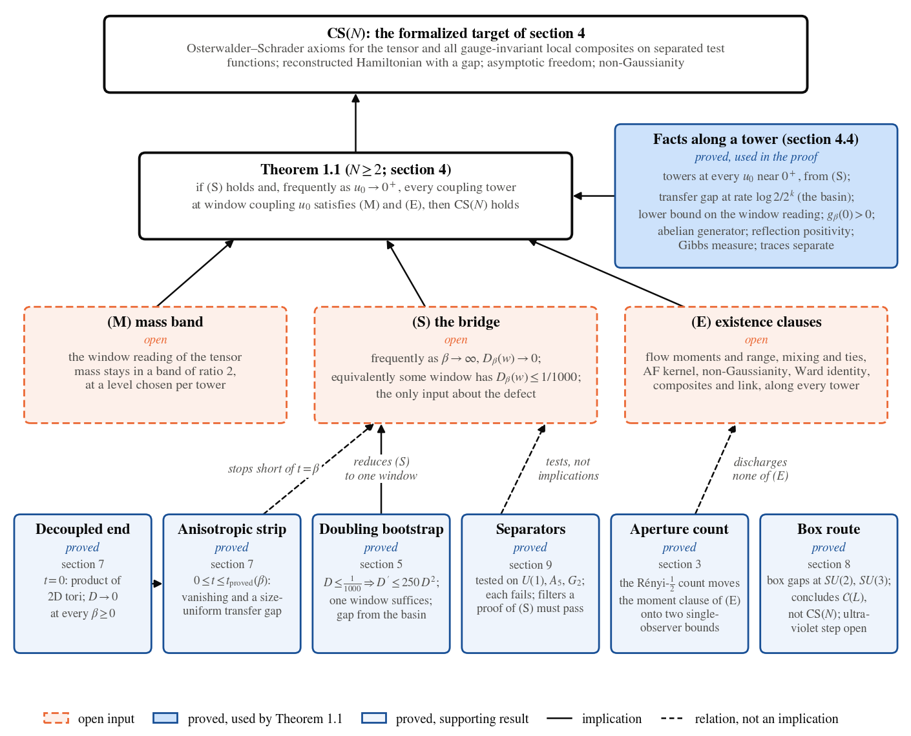
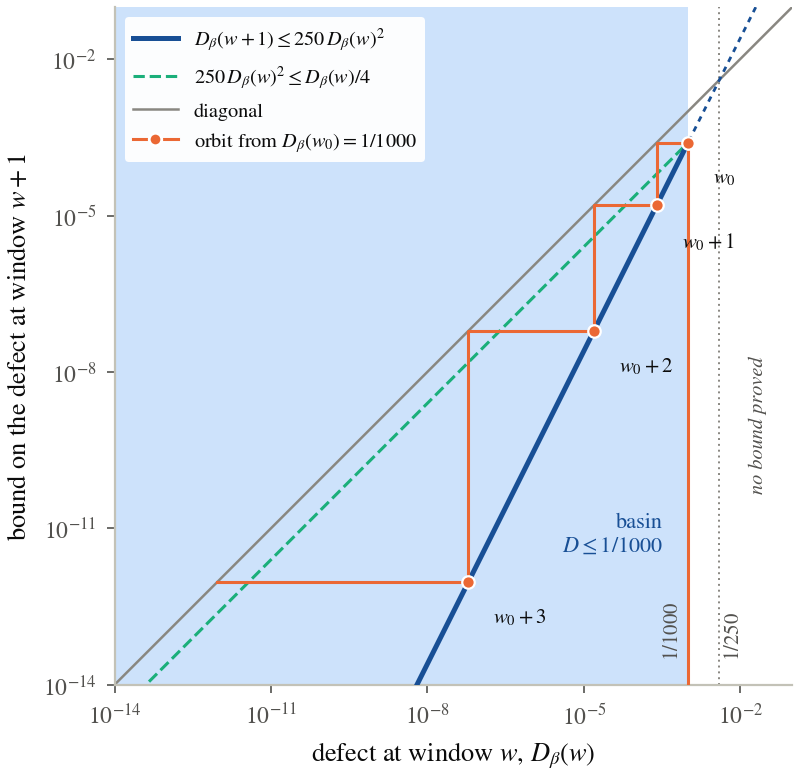
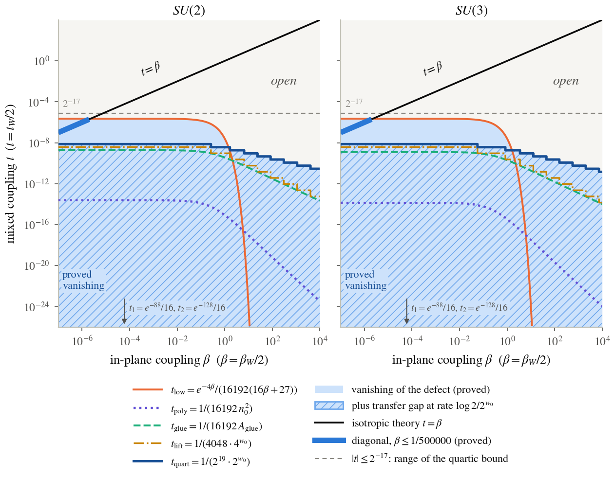
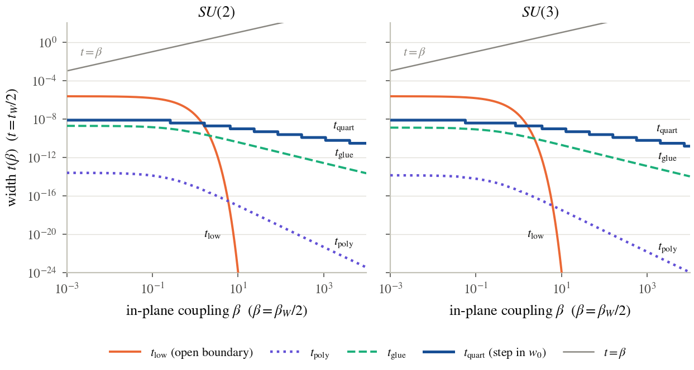

1. Introduction
1.1 The frame and what it contributes
In the frame of the Entroptics paper [Entroptics] a signal is read through a finite aperture: the aperture holds a finite number of modes, and that number is read from the spectrum of what it sees (§E-2, §E-3.1). This paper takes the frame to the continuum limit of four-dimensional $SU(N)$ lattice gauge theory. The observer reads the field through an aperture of fixed physical resolution: whatever the lattice spacing, it smooths the field over a region of fixed physical size (section 2). A finer lattice is a finer substrate beneath the same aperture, and the continuum theory is the limit of what the aperture reads.
The frame carries mathematical content in two places, one on each half of the problem.
- The window (gap side, sections 4 and 5). The doubling defect of the periodic torus, sixteen tori of side $n$ against one of side $2n$, cancels the bulk free energy exactly and counts every excited state with its multiplicity. The dyadic sides, the two-loop spacing $a_k$ and a level $u_0$ are chosen; along a coupling tower the coupling at each window is then read from the defect as the one at which it takes the value $u_0$, and the tie of $\beta_k$ to $a_k$, which carries the asymptotic-scaling content, is the open input (M).
- The count (existence side, section 3). Inside a box of fixed physical side the observer's readings form a finite screen with uncorrelated modes. One variance bound and a per-mode moment bound give every even moment of a reading through the Rényi count of order ½, with constants free of the box and the zoom.
In its own setting, a signal read through a window and a band of consecutive frequencies, the frame's central claim is proved: the aperture holds $TW/N$ modes up to a logarithm (Theorem 3.15). For the heat-smoothed screen of the Wilson field it is reduced to one inequality, the bare plaquette covariance on the box at most a fixed multiple of the one-link conditional variances of the lowest-mode field, eventually along the two-loop couplings (Theorems 3.10 to 3.12); that inequality is open (section 3.7). What Entroptics gives beyond the standard toolkit, within what is proved, is two choices that the problem itself fixes: the window of the anisotropic strip is set by a proved bound on the plane's correlation area, the area $\ell_N(\beta)$ within which its plaquette walk mixes (Theorem 7.8), which fixes the seed window of Theorem 7.12, and the order ½ of the count is forced, as the greatest order at which the single-reading moment closure holds (Theorem 3.6). Everything else proved here (the bootstrap, the strip, the box gaps, the group port, the separators and the reduction) is a statement about the Wilson measure, its transfer operator and its Osterwalder–Schrader reconstruction, and its proof uses neither an aperture nor a count.
1.2 The problem and the formalized target
Jaffe and Witten [JW] ask, for every compact simple gauge group, for a quantum Yang–Mills theory on $\mathbb R^4$ satisfying axioms at least as strong as the Wightman or Osterwalder–Schrader axioms [OS1], [OS2], with a mass gap $\Delta>0$. The standard route is the reflection-positive Wilson lattice measure [Wilson], [OsterwalderSeiler], [FILS1]. At strong coupling its infinite-volume theory and gap are classical [OsterwalderSeiler], [Seiler82]; at weak coupling the ultraviolet stability of the existence half is the subject of Bałaban's program [Balaban84a]–[Balaban89b], and the gap half is open.
The target of this paper is a proposition $\mathrm{CS}(N)$, stated clause by clause in section 4. Informally: there are couplings $\beta_k\to\infty$ whose measured tensor mass lies, for all large $k$, in a band $[c\,a_k,2c\,a_k]$ around the two-loop dyadic spacing $a_k$; a configuration flow of fixed physical range; and a reflection-closed class of local fields, such that the periodic Wilson states read through the flow have limit Schwinger functions along a fixed ultrafilter satisfying, on separated test functions, the Osterwalder–Schrader axioms for the renormalized tensor $T_{\mu\nu\rho\sigma}\sim\operatorname{tr}F_{\mu\nu}F_{\rho\sigma}$ and for all gauge-invariant local composites; the reconstructed Hamiltonian has a gap on the vacuum complement, on the tensor's space and on the space of all local fields; the trace two-point function has the short-distance form of asymptotic freedom; the connected three-point function of the trace is non-zero; and the translation Ward identity holds. It differs from [JW] in five ways: only $SU(N)$; separated test functions; one fixed ultrafilter; the Wightman reconstruction argued, not formalized; and an existentially chosen flow and coupling sequence. $\mathrm{CS}=\forall N\ge2:\mathrm{CS}(N)$.
1.3 The headline
Write $Z_\beta(n)$ for the partition function of the $SU(N)$ Wilson action on the periodic four-torus of side $n$ ($\beta=\beta_W/2$, $\beta_W=2N/g_0^2$), and $D_\beta(w)=16\log Z_\beta(2^w)-\log Z_\beta(2^{w+1})$ for the defect at window $w\ge1$. The basin is the region $D_\beta(w)\le1/1000$, and a window in it is a seed: by the doubling bootstrap of section 5 a seed forces $D_\beta(w')\to0$ along all later windows and a transfer gap of rate $\log2/2^w$. A coupling tower at window coupling $u_0$ is a sequence $\beta_k\to\infty$ with $D_{\beta_k}(k)=u_0$ for all large $k$. Let $E(x)=P_{01}(x)-P_{23}(x)$ be the tensor reading, $P_{\mu\nu}(x)$ the Wilson density of the plaquette at $x$ in the $(\mu,\nu)$ plane, and $m(\beta)\in[0,\infty]$ its measured mass under the periodic state, the supremum of the exponential decay rates of its connected correlation; $a_k=a(1)/2^{k+1}$, with $a(1)$ the two-loop running spacing (section 8) evaluated at $\beta=1$ ($\beta_W=2$).
Theorem 1.1 (the reduction; section 4). Let $N\ge2$. Suppose
(S) frequently as $\beta\to\infty$, $D_\beta(w)\to0$ as $w\to\infty$;
and suppose that, frequently as $u_0\to0^+$, every coupling tower $(\beta_k)$ at window coupling $u_0$ satisfies
(M) there is $c>0$ with $c\,a_k\le m(\beta_k)\le2c\,a_k$ for all large $k$;
(E) the existence clauses of $\mathrm{CS}(N)$ along $(\beta_k)$: a flow with factorial cube-moment bounds for the symmetrized plaquette class and a physical range; a renormalized tensor with its symmetries, ties and normalizations; a two-point kernel with the asymptotic-freedom coefficient; non-Gaussianity; the Ward identity; the composites with their data, Osterwalder–Schrader clauses and link to the reconstruction; and convergence of the mixed readings, with each limit equal to the inner product of the corresponding reconstructed vectors.
Then $\mathrm{CS}(N)$ holds.
(S) is the gap input and (M) ties each tower's coupling to the two-loop spacing $a_k$. The proof: (S) gives towers at every small $u_0$; at $u_0\le1/1000$ each window of a tower is a seed, so the periodic transfer has a gap at lattice rate $\log2/2^k$, a fixed rate in units of $a_k$; (M) makes the tower a measured tower of the target; and the reconstruction through the flow of (E) carries the gap to the Hamiltonian (section 4.3). The theorem derives the gap side and several Osterwalder–Schrader clauses (the Hamiltonian gap, the spectral gaps on the tensor's space and on all local fields, OS2 and OS4, the link of the reconstruction to the lattice vectors, the non-zero vectors orthogonal to the vacuum) from (S) and (M), using the moment bound and range of the flow that (E) supplies, and takes the remaining clauses from (E). It is per $N$, and nothing shows the three inputs consistent with one another. Figure 1.1 draws its structure.

1.4 What is proved without open inputs
| result | where |
|---|---|
| the doubling bootstrap: $D_\beta(w)\le1/1000\Rightarrow D_\beta(w+1)\le250\,D_\beta(w)^2$ and vanishing; a transfer gap of rate $\log2/n$ uniform in the torus size from one seed; the periodic gap of the infinite-volume state from one window; the fork $D(w+1)\le30\,Y(w)(e^{8D(w)+2D(w+1)}-1)$ and the three stall shapes; vanishing on $[0,\beta_0)$, openness, the weak end on fixed tori; (S) equivalent to one window below $1/1000$ frequently, and to towers at every small $u_0$; (S) and vanishing at every $\beta$ from a bounded relative rate of the defect in the basin (Theorem 5.10) | 5 |
| the count: every even moment from one variance through $R_{1/2}$; the count bound on a box reduced to one inequality (Theorems 3.10 to 3.12); control beyond the seed window and none below it (Theorems 3.13, 3.14); the count cannot be dropped; ½ the sharp order of the single-reading closure; the free flowed spectrum bounded uniformly in the zoom; the count $TW/N$ up to a logarithm in the setting of the Entroptics library (Theorem 3.15) | 3 |
| the observer: the $SU(2)$ step and its flow; the continuum structure (Euclidean symmetries, continuous time, OS0–OS3 under one cube bound, tempered Schwinger functions, $SO(4)$ from one rotation) | 2 |
| the decoupled end: $Z(\beta,0,n)=Z_2(\beta,n)^{2n^2}$ and vanishing at every $\beta$; the anisotropic strip with explicit widths and a size-uniform transfer gap | 7 |
| box gaps for $SU(2)$ at $\beta\le83/1000$ and $SU(3)$ at $\beta\le19/100$, with lattice mass at most $1/508$; the ultraviolet step equal to the branch gap; the one-cube reduction | 8 |
| the fixed level of (M) refuted under (S); constant sequences are not measured towers, and at the two-loop couplings the target's clauses exclude degenerate witnesses | 4 |
| properties that do not separate $SU(N)$ from $U(1)$ | 9 |
Section 6 proves each step of the aperture chain as an implication from a named input (item 5 of section 1.5) and derives neither (S) nor the seed from them. The section maps of the formalization record, for every numbered theorem, its declarations; where the formal statement is narrower than the prose, the prose states the narrower form.
1.5 What is open
Every open statement of the paper is listed here once; the sections point back to this list. Theorem 1.1 is a conditional reduction: (S), (M) and (E) are not proved, so $\mathrm{CS}(N)$ is not proved at any $N$, and $\mathrm{CS}(N)$ itself is narrower than the problem of [JW] in the five ways of section 1.2.
- (S) at every $N\ge2$. No seed window with $D_\beta(w)\le1/1000$ is known at any large $\beta$; the anchor sits near $\beta=0$; the strip shrinks to the decoupled axis as $\beta$ grows; the fork classifies a failure of vanishing without excluding any of its shapes; the zero-flux transfer spectrum at the window scale is the open content (sections 5, 9). Theorem 5.10 derives (S) from a bounded relative rate $|\partial_\beta D_\beta(w)|\le K\,D_\beta(w)\log(1/D_\beta(w))$ in the basin, above couplings arbitrarily close to $0^+$; that rate is asymptotic scaling read at the window and is not proved. Section 6 records further forms of (S) (Theorem 6.21). A Gaussian model of the abelian field fails (S); compact $U(1)$, with its massless Coulomb phase at large $\beta$ [Guth], [FrohlichSpencer], is expected to fail it, not proved to.
- (M). It is not refuted; its fixed-level form is refuted under (S). Its reductions along one tower (a pairwise ratio, a correlation floor at the tower's depth, a next-window floor with an overlap, a crossing condition) are proved; their inputs are not, and finiteness of the measured mass along a tower is not proved (section 4.4).
- (E) in full. Its moment clause reduces through the count to a per-mode bound, a bound on $R_{1/2}$ of the observer's screen and bounds on the variance and mean of the reading in physical units (Theorem 3.9), and through a site-exponential bound to one exponential moment at one site (Theorem 6.6); neither set of inputs is proved at any coupling of the interacting theory, and the other clauses of (E) are untouched (sections 3, 4.6). The count bound for the heat-smoothed screen of the Wilson field reduces (Theorem 3.12) to one inequality, the operator norm of the bare plaquette covariance on the box at most a fixed multiple of the one-link conditional variances of a sparse split of the lowest-mode field, eventually along the two-loop couplings. That inequality follows from two hypotheses along those couplings, a per-link floor and a tail bound, neither proved; the tail, the fine scales between the lattice spacing and the correlation length, needs renormalization-group control (section 3.7).
- On the box route, the ultraviolet step (the branch gap), the bounded seed, the one-cube condition along the branch and the continuum inputs (B1)–(B3); the proved box couplings cover no full octave of the weak-coupling branch (section 8).
- The inputs of the aperture chain: the reading representation, exact lumping, confined edges, string scaling, the single-cell input, aperture invariance against a clustering reference, no fade at the fine end, and the bridge on a box tied to the flow (section 6).
- Invariance of the observer's limit under one non-lattice rotation; independence of the ultrafilter; uniqueness of the periodic state; the Wightman reconstruction (sections 2, 4).
- On the lattice family of the OpenAI construction, which supplies existence: the seed at sides of bounded physical size along its couplings, the side condition on its tori, and the link of section 4.8: that its reconstruction meets the hypotheses of Theorems 4.48 and 4.49 with the bounds of Theorems 4.46 and 4.47.
1.6 Prior work
Reflection positivity and the strong-coupling gap go back to Osterwalder and Seiler [OsterwalderSeiler] and [FILS1], [FILS2]; Seiler's monograph [Seiler82] collects the constructive results. Bałaban's program [Balaban84a]–[Balaban89b] controls the weak-coupling renormalization group in finite volume; this paper does not use it, Theorem 6.15 takes a hypothesis of its type, and section 3.7 names it as what the fine scales of the count need. Chatterjee and coauthors develop lattice Yang–Mills by probabilistic methods [Chatterjee16], [ChatterjeeJafarov], [Chatterjee19], [ChatterjeeIsing], [Cao20], [ChatterjeeConf], [ChatterjeeYMH], [CaoChatterjee] (overview [ChatterjeeYM4P]). Douglas's Lean 4 library [DouglasLGT] formalizes, by Dobrushin uniqueness, exponential decay of plaquette correlations for $U(n)$ Wilson theory on periodic tori of every dimension $d\ge2$ at $\beta<1/(32n(d-1))$ in its normalization; the strong-coupling gap here is a spectral gap of the transfer operator in the infinite-volume periodic state (Theorem 5.15), reached by a different route. OpenAI's construction of pure Yang–Mills theory [OpenAIYM], assessed in [YMGAssess1], proves existence of a Wightman theory as a subsequential scaling limit of Wilson lattice gauge theory and leaves the mass gap and uniqueness open; section 4.8 relates it to this paper. Shen, Zhu and Zhu [ShenZhuZhu], Adhikari and Cao [AdhikariCao] and Cao, Nissim and Sheffield [CaoNissimSheffield] work in regimes or with groups that do not reach (S).
The squaring of a Rényi-2 entropy under doubling is the purity bootstrap. It is known from OpenAI's two-dimensional $O(3)$ and $O(4)$ work [OAI-O3], [OAI-O4], whose doubling argument is the template of section 5 and whose normalization by the theory's own correlation length the window imitates, from OpenAI's proof of the periodic spin-one Haldane gap [OAI-Haldane] and from Grover's extensions of that proof [Grover] (all unrefereed); we do not claim it. Section 5 supplies the four-dimensional bookkeeping with the constants $250$ and $1/1000$, the trace facts at kernel level without trace-class theory, the passage to the infinite-volume periodic gap, the fork and the formalization. The reduction of the ultraviolet step to one cube of fixed physical size is due to Bhattacharjee, Bhattacharya, Lockwood and Romanov [BBLR-v442] (unrefereed); Theorem 8.10 formalizes its lattice step (section 8). The cumulant bound of section 7 is a real-variable form of [Janson], [FMN]; the polymer criterion is of Kotecký–Preiss type [KoteckyPreiss]; the finite-size criterion of section 8 is Knabe's [Knabe]; the twisted boundary conditions are 't Hooft's [tHooft]; the per-mode bound on the spin cube is Bonami's inequality [Bonami].
1.7 Notation
$\beta=\beta_W/2$ is the coefficient of the ordered-plaquette action; Monte Carlo couplings (section 10) are $\beta_W$. $\nu_\beta$ is the periodic infinite-volume Wilson state, a limit of torus states along an ultrafilter of extents containing every power-of-two side; it satisfies the DLR equations, and uniqueness is not shown. $T_\beta$ is its periodic transfer. The letter $T$ has several uses, told apart by subscript or argument: $T_\beta$ the transfer, $T_x$ the translation by $x$, $T(t)$ the time semigroup, $T_{\mu\nu\rho\sigma}$ the tensor, $T(\rho)$ the Dynkin index of $\rho$, and $T$ alone the window length of Theorem 3.15, where $N$ is the number of sites rather than the rank of $SU(N)$. $D_\beta[n]$ carries a side and $D_\beta(w)=D_\beta[2^w]$ a window index. A field is a continuous gauge-invariant function of finitely many links. $\theta$ is the time reflection, $\mathcal U$ the fixed non-principal ultrafilter on $\mathbb N$. "Eventually" as $x\to x_0$ means for all $x$ close enough to $x_0$ (all large $x$ when $x_0=\infty$), and "frequently" means for $x$ arbitrarily close to $x_0$ (arbitrarily large $x$). For weights on a finite set, $p=w/\sum w$, $\mathrm H=-\sum p\log p$, $R_\alpha=(\sum p^\alpha)^{1/(1-\alpha)}$, $R_1=e^{\mathrm H}$.
2. The observer and its continuum theory
2.1 The picture (argued)
A local observer reads the world through a boundary of finite capacity [Bekenstein73], [Bekenstein81], so it resolves finitely many cells of positive size: it is an aperture of finite resolution (argued). Two readings of this motivate proved statements. A view carried by finitely many modes has autocorrelation $\sum_kP_km_k^\tau$, which either keeps a mode of unit modulus or decays at the positive rate $-\log\max|m_k|$ (elementary); a finite aperture therefore favours a gap, and the problem is that the rate stay positive in physical units as the substrate is refined (argued). This is what the doubling defect of section 5 reads at one physical scale. And the energy a fixed physical region holds should stay bounded at every spacing, because the factor $a^{-4}$ of the energy density cancels against the region's volume in lattice cells (argued); this is the cube bound (C) of section 2.4 and the moment clause of (E). A band limit with a vanishing remainder is not stated: the flowed heat-kernel spectrum has no compact support, so the finite-information content is stated as boundedness of the measured count (section 3), not as an exact projection.
2.2 The smearing step
Let $G=SU(N)$. For a link $U_\mu(x)$ let $S_1,\dots,S_6$ be its six staples. One step replaces every link at once by the polar factor of $X=U_\mu(x)+c\sum_iS_i$ with its determinant phase removed, $0\le c$, $(1+6c)^N<2$; then $|\det(1+E)-1|<1$ for $X=U(1+E)$, so $X$ is invertible and the phase returns it to $SU(N)$. The step is continuous, gauge covariant, inverted when its inputs are, and independent of the staple order (derived on paper at general $N$; formalized at $N=2$). At $N=2$ the polar factor of a quaternion matrix is $X/\sqrt{\det X}$, and the step is defined on $0\le c<\tfrac16$.
Theorem 2.1 (the $SU(2)$ step). Let $0\le c<\tfrac16$. If a $2\times2$ quaternion-form matrix $V=W+E$ has $W\in SU(2)$ and $E$ of quaternion norm below $1$, then $\det V\ne0$ and $V/\sqrt{\operatorname{Re}\det V}\in SU(2)$. The step $(W,S_1,\dots,S_6)\mapsto V/\sqrt{\det V}$, $V=W+c\sum_iS_i$, is a continuous map $SU(2)\times SU(2)^6\to SU(2)$, gauge covariant ($W\mapsto gWh^{-1}$, $S_i\mapsto gS_ih^{-1}$ gives $g(\cdot)h^{-1}$), inverted when its inputs are, and independent of the order of the staples.
Theorem 2.2 (reflection). Applied to every link of a configuration on $\mathbb Z^4$ at once, the step commutes with the reflection through the plane $x_\tau=0$ in every direction $\tau$.
For small abelian fields the step multiplies each mode of the curl-curl operator by $1-\eta\lambda$, $|1-\eta\lambda|\le1$, $\eta=c/(1+6c)$, and at $SU(2)$ it obeys $s(P')\le(1+96\eta^2)(s(P)+\Sigma(P))$, so flat regions stay flat (both derived on paper, not formalized).
2.3 The observer as a configuration flow
The observer at step $k$ runs $n_k$ steps, each output link computed from steps run only inside the box of half-width $R_k$ around it (measured on link midpoints, so the reflection maps boxes to boxes), the outside held fixed.
Theorem 2.3 (range independent of the number of steps). Let $0\le c<\tfrac16$. (i) If every link near a link of $S$ lies in $A$, two configurations agreeing on $A$ still agree on $A$ after any number of steps run on $S$ with the outside fixed. (ii) The output at $l$ of $n$ steps run on the links based within $R$ of the base of $l$ depends only on the links based within $R+1$ of it, for every $n$; on the midpoint box of half-width $R$ the same argument gives range $R+3$ (Theorem 2.4).
Theorem 2.4 (the observer). For any sequences $(n_k)$, $(R_k)$, the observer $V_k$ is a configuration flow of $SU(2)$ lattice gauge theory on $\mathbb Z^4$: continuous, gauge covariant, commuting with the time reflection in every direction, with lattice range $R_k+3$. If eventually $a_k(R_k+3)\le r$, the flow has physical range $r$.
The observer fixes its step count by its own scale, $n_k^2\langle e\rangle_k(n_k)=w$, the step analogue of $t^2\langle E(t)\rangle$ [Luscher] (defined; the theorems hold for every $(n_k)$). Theorems 2.5 to 2.14, and the theorems of sections 3 and 4 that do not name a particular flow, are stated for an arbitrary configuration flow with the properties they name, so the observer is one candidate witness; whether it meets the moment clause of (E) is open.
2.4 Schwinger functions and the cube energy
A schedule is couplings $\beta_k$ and spacings $a_k$ with states $\nu_k$ the periodic Wilson states at $\beta_k$. Theorems 2.5 to 2.13 are stated at the two-loop couplings, $a_k=a(1)/2^{k+1}$ and $\beta_k$ with $a(\beta_k)=a_k$; Theorem 2.14 carries the parts it lists to every coupling sequence. For a field $O$ and a bounded test function $g$ of bounded support the smeared field is $\phi_k(F,g)=a_k^4\sum_xg(a_kx)F_k\circ T_x$, $F_k$ the observer's reading of $O$; Schwinger functions are moments of products of these, and limits are taken along $\mathcal U$. The energy density is $E_k(O)=a_k^{-4}(O\circ V_k-s_k(O))$ on a reflection-closed class of non-negative fields; the class used is the plaquette class, the Wilson densities $1-\tfrac1N\operatorname{Re}\operatorname{tr}U_p$ of single plaquettes and their reflections. The canonical factor cancels against the cell volume, so the uniform bound on smeared moments is a statement about plain cube sums:
(C) for every $O$ in the class, $R\ge0$ and $p$, the cube energy $\mathcal E_k(R)=\sum_{a_kx\in[-R,R]^4}O\circ V_k\circ T_x$ has $\nu_k(\mathcal E_k(R)^{2p})$ bounded eventually in $k$.
(C) is a statement about the state, not about configurations: the step fixes every configuration with links in the centre (Theorem 2.15), and one such configuration reads $2$ on a plaquette.
Theorem 2.5 (the uniform bound is the cube energy). On a reflection-closed class of non-negative fields with reflection-invariant subtractions $|s_k|\le Sa_k^4$, the smeared moments of the energy density are bounded eventually in $k$ for every test function and order if and only if (C) holds.
Theorem 2.6 (the unit cube). For a non-negative field, $\nu_k(\mathcal E_k(R)^{2p})\le((2R+1)^4)^{2p}\nu_k(\mathcal E_k(1)^{2p})$. If $\nu_k(e^{t\mathcal E_k(1)})\le C$ eventually for one $t>0$, then eventually $\nu_k(\mathcal E_k(R)^{2p})\le((2R+1)^4)^{2p}(2p)!\,t^{-2p}C$.
2.5 The Euclidean and Osterwalder–Schrader structure
Reflection positivity of the Wilson state at every real coupling, with the physical range of the flow, makes every reflected Gram sum of products beyond the range non-negative; the reflection form reconstructs a Hilbert space generated by the observer's fields alone, with a vacuum and positive transfers.
Theorem 2.7 (Euclidean structure). At every $SU(N)$ the limit Schwinger functions of the observer's fields are unchanged under permutations of the family, translations by $a_mn$ ($n\in\mathbb Z^4$) and axis reflections. Given the uniform bound they have non-negative reflected Gram sums on products beyond the range; the form is the same at every dyadic step, $T_m=T_{m+1}^2$ on the products, and each $T_m$ is positive.
Theorem 2.8 (continuous time). Given the uniform bound and the range, $T_{m+1}^2=T_m$ on $\mathcal H$, $T_0$ has trivial kernel, and $T(t)=T_0^{t/a_0}$ is a semigroup of positive self-adjoint contractions with $T(na_m)=T_m^n$, strongly continuous on $[0,\infty)$, norm continuous on $(0,\infty)$, fixing $\Omega$.
The generator $H$ of the semigroup, $Hu=\lim_{t\to0^+}t^{-1}(u-T(t)u)$ (formally $-a_0^{-1}\log T_0$), is self-adjoint and non-negative; the Hamiltonian gap of the target is a gap of this $H$.
Theorem 2.9 (hypercubic invariance). For the energy density of a flow commuting with the axis permutations, the Schwinger functions at every step and in the limit are invariant under every word in the axis permutations and reflections; at hypercubic-scalar fields, under the $384$ signed permutations of $\mathbb R^4$.
The plaquette density summed over its $384$ hypercubic images gives the symmetrized plaquette class, on which (E) and Theorem 1.1 are stated; for a flow commuting with the axis permutations, (C) on the plaquette class gives (C) on it.
Theorem 2.10 (Osterwalder–Schrader structure). Assume (C). Then (OS0 on each cube) $|S_n(g_1,\dots,g_n)|\le K\prod_i\|g_i\|_\infty$ for tests in $[-R,R]^4$, with $K=1+n(2n)!\,t^{-2n}C$ for one field of the class under an exponential cube moment; the Schwinger functions are multilinear and sup-norm continuous on each cube; (OS1) invariant under every real translation of uniformly continuous tests and under axis reflections; (OS3) symmetric; (OS2) reflection positive beyond the range.
Theorem 2.11 (growth). For a field $O$ of a non-negative reflection-closed class, if $\nu_k(e^{t\mathcal E_k(1)})\le C$ eventually, then the Schwinger functions of $O$ satisfy $|S_n(g_1,\dots,g_n)|\le\alpha\gamma^n(n!)^2\prod_iM_i(2R_i+3)^4$ for $|g_i|\le M_i$ supported in $[-R_i,R_i]^4$, with $\alpha=1+C$, $\gamma=8(1+t^{-1})^2$: the Osterwalder–Schrader linear growth form.
Theorem 2.12 (Schwartz test functions). Under the hypothesis of Theorem 2.11: (i) $|S_n|\le(1+n(2n)!\,t^{-2n}C)\prod_i8192\|g_i\|_5$ with $\|g\|_K=\sup(1+\|y\|_\infty)^K|g(y)|$; (ii) the truncations converge; (iii) the limit agrees with $S_n$ on compactly supported tests and obeys (i) in Schwartz seminorms; (iv) it extends to a multilinear tempered distribution in each slot. (v) Under the factorial cube moments with one $t$ and $C$ for the whole class (as one exponential moment uniform over the class gives), the extension to continuous decaying functions is invariant under real translations, reflection positive beyond the range, and $SO(4)$-invariant whenever the compactly supported functions are; with a transfer gap at one step and a non-zero connected pairing it forms one linked Euclidean datum (Hilbert space, semigroup with its gap, the monomials as vectors).
2.6 Rotations from one rotation
The rotation $P$ by $(\tfrac35,\tfrac45)$ in the $(0,1)$ plane has an angle irrational in units of $2\pi$ (its powers are $(3+4i)^n/5^n$ with $(3+4i)^n\equiv3+4i\pmod5$); the coordinate-plane rotations of $(0,1)$, $(1,2)$, $(2,3)$ generate $SO(4)$, and signed permutations conjugate $P$ into each plane; (C) makes the Schwinger functions continuous in the rotation.
Theorem 2.13 (rotation invariance from one rotation). On a non-negative reflection-closed class with (C), read through a flow commuting with the axis permutations, invariance of the limit Schwinger functions of the hypercubic-scalar fields under $P$, on uniformly continuous tests, gives invariance under all of $SO(4)$ on them; in particular for the symmetrized plaquette class.
Invariance under $P$ is the restoration of rotation symmetry in its smallest form; it is not proved.
2.7 Over a compact group, at a general schedule
Theorem 2.14 (the schedule along a coupling sequence). For every compact gauge group and every coupling sequence, the schedule with spacings $a(1)/2^{k+1}$ and the periodic Wilson states is reflection positive and invariant under lattice translations, dyadic time shifts and axis permutations; at every such schedule, given the uniform bound and the range, the reconstruction carries a semigroup of positive self-adjoint contractions with spectrum in $[0,1]$ fixing the vacuum, the cube moments follow from one unit-cube exponential moment, the Schwartz extension exists, and the generator is self-adjoint.
Theorem 2.15 (centre configurations are fixed). At $SU(2)$, with $c\in[0,\tfrac16)$, the observer flow at every number of steps and radius fixes every configuration with all links in $\{\pm1\}$.
(C) is not proved for any flow at which the target can hold: the flat flow meets it and the target fails there, and at the identity flow a plaquette floor of order $1/\beta^2$ defeats its class-uniform form, the class moments (Theorem 4.28).
3. The count
In the frame an aperture holds a finite number of modes, read from the spectrum of what it sees (§E-3.1, §E-3.2). Here that count does mathematical work: if each mode of the observer's screen is hypercontractive relative to its own variance, the reading's variance gives every even moment through the Rényi count of order ½, and for the single-reading closure no order above ½ does. None of the hypotheses of Theorems 3.8 and 3.9 is proved at any coupling of the interacting theory.
3.1 The screen and its modes
Let $\nu$ be a state on $C(X,\mathbb R)$, $X$ compact. A screen is a finite family $F=(F_y)_{y\in\iota}$ of real continuous functions; its Gram matrix $G_{yz}=\nu(F_yF_z)=U\operatorname{diag}(\lambda)U^{\mathsf T}$ has modes $e_\alpha=\sum_yU_{y\alpha}F_y$.
Theorem 3.1 (modes). (i) $\nu(e_\alpha e_\beta)=\lambda_\alpha\delta_{\alpha\beta}$, so $\lambda_\alpha\ge0$; (ii) $F_y=\sum_\alpha U_{y\alpha}e_\alpha$ and $\sum_\alpha\lambda_\alpha=\sum_y\nu(F_y^2)$; (iii) every column of $U$ is a unit eigenvector of $G$.
The counts of a spectrum are the Shannon count $e^{\mathrm H}$, the Rényi counts $R_\alpha$ (with $R_{1/2}=(\sum\sqrt{p_k})^2$ and $R_2=1/\sum p_k^2$), and the level counts $n_i(a)=\#\{k:p_k>a^{2(i+1)}\}$ for a ladder $a\in(0,1)$; none has a witness to choose. The observer's screen at aperture $s$ and step $k$ is the connected flowed reading of a channel translated over the box $\{0,\dots,n_s-1\}^4$, $n_s=\lceil s/a_k\rceil$, of fixed physical side; each reading reads only the translate of the flow's light cone around the channel's support. The library [S] reads the whole family through one function, renyi_count(weights, order), with order ½ as its default because of Theorems 3.3 and 3.6.
3.2 Every moment from one variance
Theorem 3.2 (Minkowski through the modes). If $\nu(e_\alpha^{2p})\le C\lambda_\alpha^p$ for every $\alpha$, then $\nu((\sum_\alpha c_\alpha e_\alpha)^{2p})\le C(\sum_\alpha|c_\alpha|\sqrt{\lambda_\alpha})^{2p}$.
Theorem 3.3 (the count turns one variance into every moment). If every reading of a finite screen has the moments of one function $G_0$ and every mode satisfies $\nu(e_\alpha^{2p})\le C\lambda_\alpha^p$, then $\nu(G_0^{2p})\le C(R_{1/2}(\lambda)\,\nu(G_0^2))^p$. At the observer's screen, with translation invariance of the state at step $k$, the connected flowed reading satisfies $\nu_k(F^{2p})\le C(R_{1/2}\nu_k(F^2))^p$.
Idea: Theorem 3.2 at one site, averaged over the $n$ sites; Cauchy–Schwarz on a unit column gives $\sum_y|U_{y\alpha}|\le\sqrt n$, and $\sum\lambda=n\,\nu(G_0^2)$, so the volume cancels. The constants are $C$ and the count; neither the box nor the step enters otherwise.
3.3 The count cannot be dropped, and which count
Theorem 3.4 (the load-bearing tests). On $\{\pm1\}^m$ with the uniform state: (i) $n$ equal weights have $R_{1/2}=n$; (ii) every Walsh character has $\nu(\chi_S^{2p})=\nu(\chi_S^2)^p$, yet $F=\sum_S\chi_S$ has $\nu(F^4)=2^m\nu(F^2)^2$; (iii) with $t_i=\exp(-2^i/2^{m+1})$ the screen $(\prod_{i\in S}t_i\,\chi_S)_S$ has one-dimensional eigenspaces, every unit eigenvector's mode satisfies $\nu(e^{2p})=\lambda^p$, and $\nu(F^4)\ge(3/2)^m\nu(F^2)^2$. So no constant bounds the fourth moment by the squared variance uniformly in $m$.
Theorem 3.5 (the counts compared). (i) $R_\beta\le R_\alpha$ for $0<\alpha\le\beta$; in particular $R_2\le e^{\mathrm H}\le R_{1/2}$. (ii) For every $B$ some spectrum has $e^{\mathrm H}\le e^2$ and $R_{1/2}\ge B$. (iii) If $n_i(a)\le c\,e^{\mathrm H}(i+1)^r$ for every $i$, then $R_{1/2}\le(c\,e^{\mathrm H}(1-a)\sum_i(i+1)^ra^i)^2$.
The library's measured count is the Shannon count; (i) and (ii) say it bounds the count the moments need from below and does not control it, and (iii) says what does.
3.4 Order ½ is sharp
The closure holds at order $\alpha$ if for every $p$ and $C$ there is $C'$ such that every finite family of pairwise uncorrelated functions $e_a$ on every compact space and state, with $\nu(e_a^{2p})\le C\nu(e_a^2)^p$, has $F=\sum_ae_a$ with $\nu(F^{2p})\le C'(R_\alpha(\lambda)\nu(F^2))^p$.
Theorem 3.6 (order ½ is sharp). The single-reading closure, read through $R_\alpha$ with one constant, holds for every $\alpha\in(0,\tfrac12]$ (with $C'=C$, since $R_{1/2}\le R_\alpha$) and fails for every $\alpha>\tfrac12$, $\alpha=1$ included; ½ is the greatest order at which it holds. For the screen closure of Theorem 3.3 only the case $\alpha\le\tfrac12$ is proved.
Idea of the failure: a spike screen on $\{\pm1\}^m$ with one mode of weight $1-\varepsilon$, $\varepsilon=2^{-m(1-\alpha)/\alpha}/2$, spread over $2^m-1$ further modes, keeps $R_\alpha$ bounded while the reading at $(+1,\dots,+1)$ is of order $2^{m\gamma/2}$, $\gamma=(2\alpha-1)/\alpha$; at $p=\lceil2/\gamma\rceil$ a uniform $C'$ would bound $2^m$. For $\alpha\ge\tfrac34$ the spike of order $\tfrac34$ serves, since $R_\alpha\le R_{3/4}$. The failure is at an order that grows as $\alpha\downarrow\tfrac12$; whether it already holds at the fourth moment for $\alpha\in(\tfrac12,\tfrac23]$ is not proved.
3.5 The free flowed spectrum
On the Dirichlet box with $J$ modes per direction, side $L$ and $d=2m$ dimensions, the flowed spectrum is $w_ke^{-2t\mu_k}$, $\mu_k$ the lattice Laplacian levels.
Theorem 3.7 (the free flowed spectrum). Let $\tau\le2t/L^2$. (i) If the top weight sits at the lowest mode and $\log(w_{k_0}/w_k)\le\kappa(2t\mu_k-2t\mu_{k_0})$, then $e^{\mathrm H}\le A_\kappa^2e((1/\tau+\pi^2)/4)^m$, the level counts grow polynomially and $R_{1/2}\le A_\kappa^2e^2e^{\mathrm H}$, with $A_\kappa$ explicit and no constant depending on $J$. (ii) The massless propagator weight $1/\mu$ meets (i) at $\kappa=1/(4d\tau)$, uniformly in the zoom, though its global weight ratio is unbounded. (iii) Under $R_{1/2}\le c\,e^{\mathrm H}$ all orders in $[\tfrac12,1]$ agree up to $c$. (iv) If every screen of the observer is such a spectrum, the count clause H3 of Definition 3.1 (section 3.6) holds. (v) The polynomial growth is load-bearing: some heat spectrum fails it at every top mode.
The bounds hold while the flow time relative to the aperture stays bounded below; a flow time fixed in lattice units is not covered. That the observer's screens in the Wilson state have such spectra is not proved. On Villain $U(1)$ with the linear flow the interacting-to-free ratio of the sorted spectra is unbounded along the zoom while the count itself survives, so the missing input is the count stated one-sided, not a comparison with the free field (argued).
3.6 The count on the existence side
Definition 3.1 (the aperture count). At a flow family $(W_s)$ and an aperture $b$: (H1) a per-mode bound $\nu_k((\sum_yv_yF_y)^{2p})\le((2p)!)^{\lceil d_j/4\rceil}(C\lambda)^p$ at every unit eigenvector $v$, every aperture $s\le b$ and channel $j$ of canonical dimension $d_j$; (H2) every channel's variance at most $(\sigma_j\bar g^2(s)^{\kappa_j}/s^{d_j})^2$, $\bar g^2$ the one-loop running coupling at the aperture, and the plaquette reading's variance and mean bounded at $b$; (H3) $e^{\mathrm H}\le D$ and $n_i(a)\le c\,e^{\mathrm H}(i+1)^r$; (af) the trace kernel settles onto its tree value times the running coupling squared.
Theorem 3.8 (the count carries the moments). Under the aperture count, every channel's moments obey $\nu_k(F^{2p})\le((2p)!)^{\lceil d_j/4\rceil}(\lambda_0\sigma_j\bar g^2(s)^{\kappa_j}/s^{d_j})^{2p}$ with $\lambda_0=\sqrt{\max(C\bar R,1)}$, $\bar R$ from Theorem 3.5 (iii); it gives the coincident-point substrate core; and with (S) and, along every tower near $u_0=0^+$, the settling window reading (the window reading $2^km(\beta_k)$ eventually finite and, from some $k_0$, moved by each step by at most $(2^{-k}/\ell)^\eta$ for some $\ell,\eta>0$) and the flow-side bundle (a flow family of physical range with the strong small-flow-time expansion, settling along the zoom, covariance, the Ward identity, non-degeneracy, generation and the three-point clause, each read through the family; Theorem 4.33) with the count in its moment slot, $\mathrm{CS}(N)$ holds.
The Wick factor is needed already in degree one, and on the spin cube the finite-chaos bound [Bonami] gives H1 with $C=e^{2\lceil d_j/4\rceil}$ for degree $q\le d_j/2$ (proved). Theorem 1.1 does not use Theorem 3.8.
The moment clause of (E) asks, for every field of the symmetrized plaquette class, $\nu_k((\sum_{x\in[-R,R]^4}O\circ V_k\circ T_x)^{2p})\le((2R+1)^4)^{2p}(2p)!\,t^{-2p}C_0$: a factorial bound on single-site moments of order $a_k^4$. On a screen of fixed physical side $\rho$ consider (ModeHyper) a per-mode bound with Wick factor $(2p)!$; (CountBound) $R_{1/2}\le\bar R$; (PhysVar) variance at most $(\sigma a_k^4)^2$; (PhysMean) mean at most $E\,a_k^4$, each eventually and over the class.
Theorem 3.9 (the moment clause from the count). (i) On a shift-invariant schedule and a non-negative class, the four statements give the factorial cube-moment bound, with $C_0=2$, $t=1/(5^4\cdot2Z)$, $Z=\max(\sqrt{C\bar R}|\sigma|,|E|,1)$. (ii) In particular, along any coupling sequence, for the symmetrized plaquette class and every flow, they give the moment clause of (E). (iii) On a non-negative class, one exponential moment at one site in physical units, $\nu_k(\exp((s/a_k^4)F_k))\le C$, gives (PhysMean) and (PhysVar).
The count replaces the one-site exponential moment of Theorem 6.6 by the per-mode bound and the count bound; it carries content only where the screen's spectrum is concentrated (on a diagonal Gram matrix the count grows like the volume). It discharges nothing of (E) by itself, and the count gives no bound on the doubling defect.
3.7 A finite aperture holds a finite count
The frame's central claim is that an aperture of fixed physical size holds a finite count of modes at every zoom. In the setting of the Entroptics library, a signal on $N$ sites read through a window of $T$ consecutive sites and a band of $W$ consecutive frequencies, it is proved (Theorem 3.15). For the Wilson measure it reduces to one property of the bare plaquette field.
Theorem 3.10 (the count on the box). (i) For any state and any orthonormal frame of the box, the order-½ count of the screen's Gram spectrum is at most the count of its diagonal in that frame; in the Dirichlet sine frame this is the two-point form of the count bound. (ii) A screen smoothed by the heat kernel at fixed physical time $\theta$ has count at most $R_{\mathrm{heat}}(\theta)\,Q$ along the zoom, whenever the bare plaquette covariance on the box has operator norm $c$ with $c\sum_\beta e^{-2\theta\mu_\beta}\le Q\sum_y\nu_k(F_y^2)$. (iii) That ratio holds, with $Q=K_0R_{\mathrm{heat}}(\theta)$, if the bare correlator is non-negative on the box and $\sum_zC(z)\le K_0C(0)$ with one $K_0$, eventually along the zoom.
Theorem 3.11 (reflection positivity signs the correlator on the axes). For the symmetrized plaquette class, the correlator $\Gamma(n)=\nu(F\,T_{ne_\tau}F)$ in every lattice direction is non-negative at even lags beyond twice the support depth for every compact group (site reflection); for $SU(N)$ (site and link reflection) it is non-negative, non-increasing and log-convex at every lag beyond twice the support depth, and the same holds for slice sums.
The heat-smoothed screen is not an observer flow of (E), which acts on configurations; Theorem 3.10 (i) connects the count of any admissible flow to the moment clause through Theorem 3.9. Positivity off the axes is not known for $SU(N)$ (for compact $U(1)$ it is Ginibre's inequality), and the uniform $K_0$ needs short-distance control of the plaquette two-point function: the transfer gap's rate shrinks along the two-loop couplings and cannot supply it.
Theorem 3.12 (the conditional variance bounds the lowest mode below). At $SU(N)$, releasing the links of a sparse set one at a time, the variance of the lowest-mode field is at least the sum of the one-link conditional variances of its local pieces. Hence the count bound for the heat screen follows from one inequality: the operator norm of the bare covariance on the box at most a fixed multiple of that sum, eventually along the two-loop couplings.
Theorem 3.12 excludes, without reflection positivity, the profile $\Gamma(0)=1$, $\Gamma(\pm1)=-\tfrac12$, which satisfies every constraint of Theorem 3.11 and has vanishing lowest-mode variance (argued); reflection positivity alone does not close the weaker form. The remaining inequality reads, at zero momentum, $\sum_zC_k(z)\le K\,\nu_k(\mathrm{cv}_lA_l)$: the plaquette correlator summed over separations is at most a fixed multiple of one link's conditional variance, uniformly as the coupling grows. Its short-distance part is free of the coupling: at every coupling and every state, if each plaquette variance on the box is at most $\kappa$ times the floor and each row sum beyond a fixed radius is at most $\kappa'$ times it, the operator norm is at most $(n\kappa+\kappa')$ times the floor, $n$ the number of sites within that radius. Neither hypothesis is proved: the first is the per-link floor, $\nu_k(\mathrm{cv}_lA_l)$ at least a fixed fraction of the plaquette variance, argued at Gaussian order only; the second is the tail. Along the two-loop couplings the box grows like $2^k$ while $\beta_k$ grows like $k$, so a comparison at one scale loses a factor at each of about $k$ scales; every single-scale tool in the formalization (Holley–Stroock, Bakry–Émery, Dobrushin influence) degrades with $\beta$ (argued). Controlling the tail with one constant is the multiscale problem of Bałaban's renormalization group [Balaban87], which is not formalized here.
Theorem 3.13 (self-similar control beyond the seed). If $\beta>0$, $w_0\ge1$ and $D_\beta(w_0)<1/1000$, the per-site action susceptibility $\chi_{2^{w_0+m}}(\beta)$ of the periodic torus is bounded uniformly in $m$. The proof splits $\chi$ into dyadic shells, identifies each shell with the second $\beta$-derivative of the doubling defect, and bounds it by interpolation against the doubly exponential decay of the defect in the basin.
Theorem 3.14 (the small windows leave the basin). For $N\ge2$ and every bound $W$, eventually in $\beta$, every window $1\le w\le W$ has $D_\beta(w)>1/1000$; hence any seed window tends to infinity with $\beta$.
Theorem 3.13, a self-similar induction on dyadic shells, controls the scales beyond the seed window. The seed window lies beyond the correlation length, so the scales the tail needs, from the lattice spacing up to the correlation length, are exactly those the induction does not reach, and by Theorem 3.14 it cannot be run downward: the small windows are never in the basin at large coupling, so the recursion has nothing to start from. What the fine scales need is a relative bound on the finite-size free energy at weak coupling, the perturbative content of the renormalization group.
Theorem 3.15 (a finite aperture holds a finite count). On $\mathbb Z_N$ let $A=P_SB_\Omega P_S$, with $S$ a window of $T$ consecutive sites and $\Omega$ a band of $W$ consecutive frequencies, $1\le T\le N$, $1\le W\le N$. The eigenvalues of $A$ lie in $[0,1]$, their sum is $TW/N$, the plunge mass $\sum\lambda(1-\lambda)$ is at most $\tfrac12(9+\log\min(T,W))$, and the number of eigenvalues above $\tfrac12$ differs from $TW/N$ by at most $9+\log\min(T,W)$.
This is the finite, discrete form of the count of time- and band-limiting [Slepian78, LandauWidom80], proved in the Lean of the Entroptics library [S]. The $9$ is computed: $4(3/2)^2$, from the crossover of the two bounds on the band kernel. The count is the area $TW/N$ of the aperture, up to a logarithm; it does not depend on what is read through it. Theorems 3.10 to 3.14 ask the same of the Wilson field, where the screen's modes are not exact frequencies and the open part is the tail.
4. The target and the reduction
4.1 The target
Fix $N\ge2$, $\beta=\beta_W/2$, $\nu_\beta$ the periodic Wilson state, $a_k=a(1)/2^{k+1}$ with $a(\cdot)$ the two-loop running spacing and $b_0=11N/(48\pi^2)$. A measured tower is a sequence $\beta_k\to\infty$ with $c\,a_k\le m(\beta_k)\le2c\,a_k$ for some $c>0$ and all large $k$, $m$ the measured mass of $E=P_{01}-P_{23}$ (read from the state alone). Fields are read through a configuration flow $W$ of fixed physical range and a reflection-closed class $\mathcal F$; test functions are continuous with pairwise $d$-separated supports; limits are along $\mathcal U$.
Definition 4.1 (the formalized target). $\mathrm{CS}(N)$ holds if there are a measured tower, a flow $W$ and a class $\mathcal F$ and, at the schedule $(\beta_k,a_k)$, a linked Euclidean datum $X$ (Hilbert space $\mathcal H$, vacuum $\Omega$, time semigroup, Schwinger functional), a renormalized mixing of the tensor, a two-point kernel $G$ and a family of composites with their vectors, such that the following fifteen groups (thirty-two conjuncts) hold.
- The functional of $X$ is the flowed limit functional of the Wilson states along the tower, a limit along $\mathcal U$; the flowed lattice Schwinger functions are bounded uniformly in the step at every translate, and the functional is the limit of the cut-off readings.
- Hamiltonian gap: the generator $H$ is self-adjoint and positive, $H\Omega=0$, and $\Delta\|u\|^2\le\operatorname{Re}\langle u,Hu\rangle$ on the vacuum complement, $\Delta>0$.
- Generation: the vectors of the compact margin monomials of the flowed fields have the flowed Schwinger functions of the reflected pairs as Gram matrix, are shifted by $e^{-a_mH}$, and span $\mathcal H$.
- Riemann symmetries of the mixing; the trace is a multiple $Z^{\mathrm{tr}}_k$ of the symmetrized plaquette field with $Z^{\mathrm{tr}}_ka_k^4\to N/8$.
- Existence of the tensor's limit; OS0 as a kernel bound $\alpha\gamma^n(n!)^bd^{-\kappa n}\prod\|c_i\|_1\|f_i\|_{L^1}$ with $\kappa$ free; OS1; $O(4)$ covariance; OS3.
- The tensor's link to $X$; OS2; OS4.
- The spectral gap on the tensor's space, with a non-zero vector orthogonal to $\Omega$.
- $G$ is continuous on $(0,\infty)$ and is the two-point kernel of the trace on continuous test functions with separated supports; $r^8G(r)(\log r)^2\to12(N^2-1)/(\pi^4b_0^2)$ as $r\to0^+$, and so tends to a positive limit.
- A non-zero connected three-point function of the trace; every channel non-degenerate.
- Channel ties; the pseudoscalar factor has $z_ka_k^4\to2$, the normalization of the topological density.
- The translation Ward identity.
- The composites' data: classical ties to the conjugation-invariant polynomials in $D_{\mu_1}\cdots D_{\mu_j}F_{\rho\sigma}$, coverage of every non-degenerate classical monomial, a renormalization triangular in the dimension, and the rotation representation on admissible potentials.
- Existence, OS0, OS1, covariance, non-degeneracy, OS3, OS2, OS4 on all composites.
- The link of all composites; the tensor among them.
- The spectral gap on the space of all local fields, with a non-zero vector orthogonal to $\Omega$.
Theorem 4.1 (the target). $\mathrm{CS}(N)$ is one Lean proposition,
ClayStatementG.ClayStatementOf (SU N), and $\mathrm{CS}=\forall N\ge2:\mathrm{CS}(N)$ isClayStatement.
Every clause on local fields is asserted on admissible families, where the lattice sequence converges along $\mathcal U$, so no clause reads the value assigned to a divergent sequence. A form asking OS0, OS1 and covariance of the connected renormalized limit on coincident supports reads a sequence that diverges for Yang–Mills, so no statement true of the theory implies it; the reconstruction of Wightman fields through E0′ on functions vanishing on the diagonals and the Osterwalder–Schrader II theorem is argued, not formalized.
4.2 Non-vacuity, generation and the group form
Theorem 4.2 (the clauses exclude degenerate witnesses). Constant sequences are not measured towers. At the two-loop couplings, trace zero, mixing zero, the free scaling form and the free massless kernel are excluded; a flat flow (replacing the configuration inside $[-L_k,L_k]^4$ by a gauge transform of the identity) makes every local field eventually constant, the reconstruction a line and no witness possible; a flowed form unchanged by one time shift admits no witness. Only the first is proved at the schedule along a measured tower; the transfer of the others to it is argued.
Theorem 4.3 (the rotation tie on all functions is excluded). For $N\ne0$ no family of composites has both coverage and the rotation tie on every function $\mathbb R^4\to(\mathbb C^{N\times N})^4$; the witness $A_0=t(4\chi(y_0)+y_2)\mathbf1$, $A_1=-3t\chi(y_0)\mathbf1$, $\chi$ the Dirichlet function, is differentiable nowhere and reads $\operatorname{Re}\operatorname{tr}F'_{20}(0)=\tfrac35tN$ after the $3$-$4$-$5$ rotation.
Theorem 4.4 (generation at the observer). At every observer built as in section 2, the vectors of the margin monomials have the reflected flowed Schwinger functions as Gram matrix, are carried by the semigroup to the shifted monomials, and span a dense subspace: clause 3 is discharged.
Theorem 4.5 (the family clause). The form of clause 3 on a family of flows $W_n$, $W_0=W$, of physical range tending to $0$ gives every part of clause 3 at $W$ except generation; generation gives it back; a family of flat members or one blind to a time step carries no witness; and the family "$W$ followed by flat flows" meets the range condition at every $W$, so range tending to $0$ adds nothing to clause 3.
Theorem 4.6 (joint reconstruction). For any family of flows with the uniform bound and one margin, the joint kernel on (member, monomial) pairs converges and is reflection positive; at the two-loop couplings the seed at the running spacing (Theorem 5.17) gives one rate with the gap of the joint transfer and of every member, and the Hamiltonian gap on the joint space when one member has a non-zero connected reading.
Theorem 4.7 (the group form and the two-loop form). The statement over a compact group $G$, with $\dim\mathfrak g$, $h^\vee$ and the Dynkin index $T(\rho)$ in place of the $SU(N)$ constants, is $\mathrm{CS}(N)$ at $SU(N)$, $N\ge2$. At the two-loop couplings the group and $SU(N)$ statements agree; under asymptotic scaling of the tensor mass along them, the two-loop form implies $\mathrm{CS}$ (converse not proved). The statement is instantiated at $SU(N)$, $SO(n)$ ($n\ge5$), $SO(3)$, $Sp(n)$, $G_2$, $F_4$, $E_6$, $E_7$, $E_8$ (each exceptional group as the stabilizer of an invariant form, constants entered as classification values), and the conjunction over the classical families implies $\mathrm{CS}$. None of the group statements is part of $\mathrm{CS}$.
4.3 Coupling towers and the proof of Theorem 1.1
For $N\ge2$, (S) is equivalent to a coupling tower at any one $u_0\in(0,1/1000]$ and to a seed window at frequently large $\beta$ (Theorem 5.9 (iv), (iii)), and a tower at $u_0\le1/1000$ carries the gap of $T_{\beta_k}$ at rate $\log2/2^k$ (Theorem 4.12).
Proof of Theorem 1.1. Let $A$ be the set of $u_0>0$ at which every tower satisfies (M) and (E); it meets every interval $(0,\varepsilon)$. Given (S), towers exist at every $u_0\in(0,1/1000]$ (Theorem 5.9 (iv)), so pick $u_0\in A\cap(0,1/1000]$ and a tower; the hypothesis is not vacuous given (S). With "some tower" in place of "every tower" the hypothesis would already imply (S), since towers at window couplings arbitrarily close to $0^+$ are equivalent to (S); the "every tower" form is the one that keeps (S) a separate input. The tower is measured by (M). The basin gives the periodic gap at rate $\log2/2^k$; read through the flow of (E) it is a transfer gap of the flowed reconstruction. With the measured tower, the moment bound and range of the flow, and an abelian generator at $SU(N)$, Theorem 4.13 derives the identification of the functional, the Hamiltonian gap, generation, the tensor's link, OS2 and OS4 on the tensor and all composites, the spectral gaps, the non-zero vectors and the tensor among the composites; (E) supplies the rest. $\square$
Of the capstones of the formalization, Theorem 1.1 has the weakest hypotheses: convergence of the window reading $2^km(\beta_k)$ along the towers with (E) implies its residual, the hypothesis beside (S) that frequently as $u_0\to0^+$ every tower satisfies (M) and (E), the measured tower coming from that convergence and the confinement read of Theorem 4.12.
4.4 The level of (M), and what is proved along a tower
By $a_k=a(1)/2^{k+1}$, (M) says that the window reading $\omega_k=2^km(\beta_k)$ lies, for all large $k$, in $[c\,a(1)/2,\,c\,a(1)]$: a band of ratio $2$ whose level is existential per tower. (M) is asked of every tower at $u_0$, and two towers at one $u_0$ interleave into a third (even steps from one, odd steps from the other), so (M) in effect puts the measured masses of all crossings $D_\beta(k)=u_0$ at large windows $k$ and large $\beta$ in one band of ratio $2$.
Theorem 4.8 (the fixed level is refuted). Let $N\ge2$. (i) If $i\ge1$ and $u_0\le(\tfrac12)^{2^i}/250$, every tower at $u_0$ has $m(\beta_k)\ge2^i\log2/2^k$ for all large $k$. (ii) For every real $U$, eventually as $u_0\to0^+$, no tower at $u_0$ has $2^km(\beta_k)\le U$ eventually, nor the reflected-floor form of that bound, which asks, eventually in $k$, that the reflected read $g_k(m)=\nu_{\beta_k}(\theta E^\circ\cdot E^\circ(2m))$ of the centred tensor reading $E^\circ=E(0)-\nu_{\beta_k}(E(0))$ against its translate by $2m$ in time satisfy $g_k(m)\ge g_k(0)e^{-2mU/2^k}$ at some $m\ge1$, and that the covariance of the mirror defect $P_{01}(-e_0)-P_{01}(0)$ ($e_0$ the unit time step) with $E(2m)$ be eventually in $m$ at most a fixed fraction $c<1$ of $\lvert g_k(m)\rvert$. (iii) (S) together with "frequently as $u_0\to0^+$, every tower satisfies the floor form at $U=2\log2$ and (E)" is contradictory, and likewise with the window upper bound.
So the window reading grows at least like $\log(1/(250u_0))$ as $u_0\to0^+$, and the level must float. By (iii), the reduction with the fixed floor, or the fixed window upper bound, in place of (M) has inconsistent hypotheses; it is vacuous and is not used. (M) itself is not refuted: along one tower the recursion gives the same floor at every window and no growth.
Theorem 4.9 (the band as a ratio). (i) Eventually as $u_0\to0^+$, a tower is measured if and only if, for some $K$ and all $j,k\ge K$, $m(\beta_j)<\infty$ and $\omega_j\le2\omega_k$. (ii) At depth $i$ ($u_0\le(\tfrac12)^{2^i}/250$), the window upper bound $2^km(\beta_k)\le2\cdot2^i\log2$ makes the tower measured. (iii) At $u_0\le(\tfrac12)^{2^{i+2}}/250$ no tower has that upper bound. (iv) (S) with the depth-graded upper bound and (E) gives $\mathrm{CS}(N)$.
The upper bound at the tower's own depth follows from a correlation floor of the tensor at the rate $2^{i+1}\log2/2^k$; no such floor, and no finiteness of $m(\beta_k)$ along a tower, is proved.
Theorem 4.10 (the transfer band). (i) One window does not bound the gap: a spectrum with $n$ equal excited levels has defect exactly $u_0$ at time $m$, every excited rate at least $C$, and defect at most $2e^{-C}(e^{u_0}-1)$ at time $2m$. (ii) On a finite spectrum, a defect at least $t$ at time $2m$ and at most $A$ at time $m$ give a level of rate at most $\log(2(e^A-1)/t)$, with count and entropy forms. (iii) For every compact group, $t\le D_\beta(w+1)$ and $8D_\beta(w)+2D_\beta(w+1)\le A$ give a step slice whose transfer has $2^w(-\log(\lambda_1/\lambda_0))\le\log(30(e^A-1)/t)$. (iv) Along a tower, a next-window floor and ceiling with an overlap of the tensor channel with the window level give the window upper bound, and at depth $i$ under a level condition, (M).
Theorem 4.11 (the next window). Along a tower at $0<u_0\le1/1000$: (i) eventually $D_{\beta_k}(k+1)\le250u_0^2$; (ii) the floor $t\le D_{\beta_k}(k+1)$ holds eventually if and only if eventually each tower step raises $D_\cdot(k+1)$ by at most $u_0-t$ ($D_{\beta_{k+1}}(k+1)-D_{\beta_k}(k+1)\le u_0-t$), and monotonicity gives only the ceiling; (iii) the positivity and squaring facts admit a corner function with $D(0)=u_0$ and $D(\mathbb 1)=0$, so they give no floor; (iv) a tower carrying the floor exists exactly under a crossing condition, and on it the overlap gives the window upper bound.
The crossing condition is the exact missing inequality on this route; read in step-scaling terms it asks that the step-scaling function of the window coupling be positive at $u_0$ (argued reading). Monotonicity of $\beta\mapsto D_\beta(w)$ is not proved.
Theorem 4.12 (along a tower, without (M) or (E)). At $N\ge2$, along a tower at $u_0\le1/1000$: $T_{\beta_k}$ has a gap at rate $\log2/2^k$; a periodic gap at rate $r$ makes the tensor decay at rate $-\log r$ in every direction (the confinement read), so the measured mass is at least the periodic transfer rate; the contact reflected read $\nu_\beta(\theta E^\circ\cdot E^\circ)$ of $E$ (the reflected read of Theorem 4.8 at separation $0$) is positive at every $\beta\ge0$; given the moment bound and range of a flow, the flowed reconstruction has a gap at every step; an abelian generator exists at $SU(N)$; and the four symmetries of the schedule and the clauses that read it only through its spacing (the physical range, the Riemann, scalar and channel ties, the composites' data) hold.
4.5 The derivation and the capstone
Theorem 4.13 (the derivation along a measured tower). For a compact group with an abelian generator and a measured tower, a flow with class moments and a physical range, a transfer gap of the flowed reconstruction at step $0$, a mixing with its symmetries and ties, a kernel with the two-point, asymptotic-freedom, non-Gaussian and Ward clauses, composites with data, analytic clauses and link, and the cross reading of the tensor give the group form of $\mathrm{CS}$ along the tower.
Theorem 4.14 (the capstone). Twenty-two hypotheses, each a clause of Definition 4.1 or the data of one, give the target clauses at $W$ and $\mathcal F$ at the two-loop couplings. The proof supplies OS3 (an identity of lattice readings), OS2 (from the Gram identities of the links), invariance of the tensor's and composites' spaces under positive time, the spectral gaps (from the Hamiltonian gap and the shift acting as time), OS4 (clustering under the gap), the short-distance form of asymptotic freedom, and the non-zero vector on all local fields (from the tensor's).
Theorem 4.15 (the capstone at $SU(N)$). From class moments, a physical range, one non-zero connected pairing and a gap at one step the observer's datum is built (Theorem 2.12); a per-field mixing discharges the tensor's convergence, kernel bound, Riemann symmetries, scalar tie and dyadic translations; real translations follow from the kernel bound; the tensor's link, existence, translation invariance, kernel bound and covariance follow from the composites' through the index map; non-degeneracy is tested on the abelian potential $A_\mu=(\tfrac12\sum_\nu x_\nu v_{\nu\mu})\operatorname{diag}(1,-1,0,\dots)$; one trace insertion gives the non-zero vector; and the non-zero pairing is removed.
Theorem 4.16 (the gap forms of the capstone at the two-loop couplings). The gap enters only as a rate $\rho\in(0,1)$ of the observer's transfer at one step. It is supplied by: the seed at the running spacing; the aperture inputs of Theorem 6.7; one bridge on a Wilson box (Theorem 6.11); and, with every proved reduction wired in, the capstone holds from the class moments, the range, the seed, the mixing data, the kernel clauses, non-Gaussianity, the Ward identity and the composites; at $N=2$ a fixed diffraction length (the slice cycle at twice the physical side at least $\exp(-CL^de^{-mL})$ times the square at the side) takes the place of the seed.
Theorem 4.17 (the seed as an edge cost). Over a compact simple group: (i) the seed at the running spacing holds if and only if some $(\sigma,A,\ell_0)$, $\sigma,\ell_0>0$, has $D_\beta[n]\le Ae^{-\sigma na}$ at every large $\beta$ and power of two $n$ with $na\ge\ell_0$, and if and only if the same bound holds on physical sides in $[2\ell,5\ell]$ for arbitrarily large $\ell$; (ii) at $SU(N)$, if and only if both centre-sector reads of every step (the flux share and the zero-flux defect of Theorem 5.20 (i)) obey that bound; (iii) at $SU(2)$, if and only if the 't Hooft vortex deficit of every corner torus and the zero-flux defect do; (iv) a Coulomb finite-size part excludes every edge cost, the massive Gaussian satisfies it below its mass, and two-dimensional $SU(2)$ satisfies it at every $\sigma$. For the hidden-mode kernel every perturbative split of the observer's transfer has rate at least $1$: the aperture's margin does not bound the full transfer.
The cutoff $\ell_0$ is part of the edge cost: far below the correlation length the finite-size part is Coulomb-like and the defect grows like $\kappa\log\beta$ (argued). The finite centre supplies the split and no bound on either part; the zero-flux half is the open content.
Theorem 4.18 (a concrete form of (E)). Fixing the flow (the block-step observer of Theorem 4.34), the mixing and the renormalized composites gives an explicit open bundle that implies (E); the same holds with one exponential moment at one site in place of the class moments (Theorem 6.6).
4.6 The existence side
Most of the existence side is stated at the two-loop couplings and concludes the two-loop form, which gives $\mathrm{CS}$ only under asymptotic scaling (Theorem 4.7); the flow-side proofs never use how the couplings are chosen, so Theorem 4.37 carries them along towers, where Theorem 1.1 needs no scaling. Each theorem below is proved as stated; each names an open input, and none discharges a clause of (E).
| result | |
|---|---|
| Theorem 4.19 | the composites built: indexed by the non-empty classical monomials, the tensor placed at $\operatorname{Re}\operatorname{tr}F_{\alpha_0\alpha_1}F_{\alpha_2\alpha_3}$; the index map, the rotation representation, coverage and the rotation tie are proved; the triangular renormalization reduces to a span condition in dimension at most four |
| Theorem 4.20 | the classical limit of the bare fields: through the plaquette letter $U_p-1$ and parallel-transported differences, each letter with $\lvert d\rvert$ derivatives is $a^{\lvert d\rvert+2}$ times a function jointly smooth in $(a,ax)$ with value $ig\,D_dF_{\rho\sigma}$ at $a=0$ (Hadamard's lemma with parameters); the channel ties hold for the bare tensor mixing |
| Theorem 4.21 | the channel-diagonal mixing: the four channel projectors (scalar, pseudoscalar, traceless Ricci, Weyl) are orthogonal idempotents commuting with $O(4)$; the Riemann symmetries, the trace tie at $z_{\rm sc}a_k^4\to2$, the pseudoscalar normalization at $z_{\rm ps}a_k^4\to2$ and the triangular renormalization at non-zero factors hold |
| Theorem 4.22 | the classical lead of the observer's field: the symmetrized plaquette density has lead $(16/N)g^2\sum\operatorname{Re}\operatorname{tr}F_{\mu\nu}F_{\mu\nu}$; with it the classical tie is discharged, and at the canonical factors the conditions on $z$ hold exactly |
| Theorem 4.23 | the trace channel is the observer's field: the trace's $n$-point reading is $(N/16)^n$ times the observer's, so non-Gaussianity and the two-point kernel clause are statements about the observer's field and read no flow |
| Theorem 4.24 | the composites' link from kernels: in a complete inner product space a joint form non-negative and approximable gives vectors with the prescribed Gram and cross pairings; joint positivity is necessary |
| Theorem 4.25 | joint positivity from the lattice reflection form, given convergence of the reflected readings; for the plaquette-letter composites lattice reflection covariance fails at every $N\ge2$ |
| Theorem 4.26 | the reflection-averaged composites are reflection covariant with the same classical leads, and there joint positivity and mixed convergence follow from the analytic clauses, the moments and the range |
| Theorem 4.27 | the channel factors fixed at $2/a_k^4$: a factor $q_k\to1$ leaves limits along $\mathcal U$ unchanged |
| Theorem 4.28 | the moment input and the flow: the flat flow meets the class moments, a vanishing reach and every physical range while its fields are eventually constant; at the identity flow $\nu_\beta(1-\tfrac1N\operatorname{Re}\operatorname{tr}U_q)\ge e^{-n(16/N+2)}/(N\beta^2)$ defeats them |
| Theorem 4.29 | approximability is the least-upper-bound condition on a gain; joint positivity does not give it, and an orthogonal component of the composites defeats it; the time step of a Reeh–Schlieder reduction is proved |
| Theorem 4.30 | families of flows: the family form of approximability gives approximability in a complete space with nested members; families of vanishing range are inert at each fixed step |
| Theorem 4.31 | the three-point input is the non-Gaussianity clause, and the convergence clause is boundedness on a set of $\mathcal U$ |
| Theorem 4.32 | unrenormalized composites: at $SU(2)$ non-degeneracy fails at the built family under an argued vanishing of the bare two-point readings; the renormalized family (step-dependent lower-dimension subtractions) meets the composite clauses, with a remaining no-go on the tensor indices at $SU(2)$ |
| Theorem 4.33 | the flow-side bundle: scale control, the small-flow-time expansion, the Ward identity, non-degeneracy, the three-point clause and generation each read through a flow family, three of them proved equivalent to target clauses under the expansion |
| Theorem 4.34 | the two-loop capstones at every $N$: the block-step observer ($12c<\sin(\pi/N)$, physical range the flow scale plus three spacings) and any observer of bounded reach, with the seed in the gap slot, give the two-loop form |
| Theorem 4.35 | narrowing the bundle: under scale control and the expansion, the narrowest per-$N$ list is scale control, the kernel, the top-scale identification, the expansion, the coefficient bound, covariance, the Ward identity, non-degeneracy, approximability (equivalently generation), the three-point clause and the seed |
| Theorem 4.36 | scale control: the identity observer is excluded; centre-valued configurations defeat the block-step and multigrid observers' moment condition at flow scale $b\ge1$; one constant over all channel dimensions fails at the $\pi$-flux fixed point; a tree-graph cumulant bound gives OS0 with factorial index $1$ |
| Theorem 4.37 | along towers: (S), an ultraviolet input along every tower (convergence or settling of the window reading) and an existence bundle give $\mathrm{CS}(N)$, for bundles from the flow inputs down to the count of section 3; each implies the residual of Theorem 1.1 |
| Theorem 4.38 | normalization and restatements: the scalar tie, channel tie and topological normalization hold together at one mixing at the factor $2/a_k^4$; the tree three-point value of the trace vanishes, so the short-distance clause gives no non-Gaussianity; the trace-anomaly identity holds at every finite volume |
4.7 The group port
The lattice layer reads the gauge group through a compact group with Haar probability measure and a plaquette density $1-\operatorname{Re}\operatorname{tr}\rho(g)/d$ for a faithful unitary $\rho$. At $SU(N)$ each step below is the $SU(N)$ step.
Theorem 4.39 (the Wilson state over $G$). For every gauge group the periodic Wilson state of the canonical schedule is invariant under translations, axis permutations and reflections, and reflection positive at every real $\beta$.
The canonical schedule is the schedule of Theorem 2.14 at the two-loop couplings (MeasuredTower.canonSched_eq_schedAlongG), so the flowed theory over $G$ there is the case of Theorem 2.14 (FlowG.schedOS_canonSched), with the uniform bound from the cube moments (EnergyBoundG.uniformBoundFG_energy_canon) and continuous time under a step-independent gap (TimeGroupG.flow_time_groupG).
Theorem 4.40 (the capstone over $G$). Theorem 4.14 holds over every gauge group with a positive asymptotic-freedom coefficient, at the canonical schedule, with the observer over $G$ built from the class moments, a unit-cube exponential moment, a range, a non-zero pairing and a gap; in the short form, non-degeneracy is tested on an abelian generator of the group's Lie algebra.
Theorem 4.41 (the abelian generator). At $SU(N)$ ($E_{00}-E_{11}$), $SO(n)$ and $SO(3)$ ($iE_{10}-iE_{01}$), $Sp(n)$ ($\operatorname{diag}(D,-D)$), $G_2$, $F_4$, $E_6$, $E_8$ (a Cartan rotation) and $E_7$ (the $U(1)$ weight $\operatorname{diag}(-3,1,3,-1)$ on the blocks of the 56-dimensional triple system, a derivation of Freudenthal's quartic) there is a non-zero Hermitian generator of $\rho(\mathfrak g)$ all of whose real multiples are generators; at $E_8$ the Cartan derivation is checked by the kernel over the 4936 non-zero triples of the bracket's 3-form.
Theorem 4.42 (the capstone over $G$ without the pairing). For every compact simple $G$, the statement over $G$ holds at the symmetrized plaquette class from the class moments, a range, a gap at step $0$, the mixing, kernel and composite data, the cross reading and an abelian generator; the generator is discharged at every group of Theorem 4.41.
Theorem 4.43 (the seed over $G$ gives the observer's gap). For every compact simple $G$: the rectangular Wilson torus is the cyclic trace of a symmetric continuous kernel in $[k_{\min},1]$, so the trace facts and the climb of the seed hold as at $SU(N)$; a power-of-two seed gives the decay by $\tfrac12$ of every gauge-invariant half-space correlation over the seed's lag along the periodic ultrafilter; one even-lag bound on the vacuum complement gives the gap by log-convexity of the reflection form alone; and the seed at bounded physical side gives the transfer gap that Theorem 4.42 takes.
That each exceptional stabilizer is the compact exceptional group, the classification constants, and the Jacobi identity and simplicity of the $E_8$ bracket (checked numerically) are not proved in the formalization. The seed over $G$ is not proved at any group.
4.8 The OpenAI construction
The construction of [OpenAIYM], assessed by the Yang–Mills group [YMGAssess1], gives, for every closed matrix group with simple non-abelian Lie algebra, one Wilson lattice family whose bare coupling runs with $\beta/\log(1/a)$ tending to a positive slope, and for every increasing sequence of torus sizes a subsequence along which the renormalized correlations converge, first in the spacing at fixed physical volume and then in the volume. The limit decomposes into component theories, each satisfying the Osterwalder–Schrader axioms with clustering and reconstructing to a Wightman theory; it carries a conserved stress tensor with its translation Ward identity, a centred trace with a proved leading short-distance law, and an operator product expansion. A mass gap, uniqueness of the infinite-volume limit and clustering of the undecomposed limit are not claimed; the assessment lists the gap and uniqueness as open [YMGAssess1, §8].
The two developments share one object, the periodic Wilson law on a finite cubic torus, and meet there.
Theorem 4.44 (the action dictionary). On every periodic lattice, the action of section 2, a sum over ordered plaquettes of $1-\operatorname{Re}\operatorname{tr}\rho(U_p)/d$, is twice the sum over unordered planes used in [OpenAIYM]; the normalized Wilson laws agree at $\beta_{\rm OAI}=2\beta$, and every expectation of section 2 at $\beta$ is the integral against their law at $2\beta$. A measurable equivalence of the configuration types carries plaquettes to plaquettes and the law of section 2 at $\beta$ to the law of [OpenAIYM] at $2\beta$ on their own configuration type, for every $\sigma$-finite single-link measure. $SU(N)$ is one of their gauge groups, with Lie algebra $\mathfrak{su}(N)$, and their Haar probability measure is carried to the Haar probability measure of section 2.
With the conversion $\beta_{\rm OAI}=d\,\beta_{\rm lgt}$ of [YMGAssess1] this reads $\beta_{\rm lgt}=2\beta/d$ in the normalization of [DouglasLGT].
Theorem 4.45 (the asymptotic-freedom dictionary). For every compact simple group, $c_{\rm AF}=12\dim\mathfrak g/(\pi^4b_0^2)=(2/b_0)^2\cdot3\dim\mathfrak g/\pi^4$, $b_0=11h^\vee/(48\pi^2)$. A complex kernel $S$ with $r^8\log^2(1/r)\,S(r)\to3\dim\mathfrak g/\pi^4$ as $r\to0^+$, the form of the trace law of [OpenAIYM], gives the kernel $c^2\operatorname{Re}S$, $c=\pm2/b_0$, that satisfies the asymptotic-freedom clause of Definition 4.1 and of its group form.
The constant $c_{\rm AF}$ was fixed here from perturbation theory, independently of [OpenAIYM]; that the kernel of the target is their trace kernel at the normalization $\operatorname{tr}F^2\leftrightarrow\pm(2/b_0)\Theta$ is not formalized.
The gap side of this paper is stated on the shared object. The seed $D_\beta[n]\le1/1000$ compares the partition functions of the cubic tori of sides $n$ and $2n$, and at $SU(N)$ Theorem 5.7 turns it into a transfer gap on every torus of side $2^kn$.
Theorem 4.46 (a uniform gap on their tori from the seed). Let $N\ge2$ and $\ell>0$, and let an $SU(N)$ lattice family have spacings $a_m$, couplings $\beta_{m,p}$ in the normalization of [OpenAIYM] and cubic tori of sides $2^{k_{m,p}}n_m$ with $n_m\ge2$ even and $n_ma_m\le\ell$. If $\beta_{m,p}\ge0$ and $D_{\beta_{m,p}/2}[n_m]\le1/1000$ for all large $m$ and all $p$, then for all large $m$ and all $p$ the law of [OpenAIYM] on the torus at $(m,p)$, with their Haar measure, is the image of the law of section 2 at $\beta_{m,p}/2$, whose transfer operator, on all of $L^2$ of the slice and in every sector, has a unit top eigenvector $\psi$ and satisfies $\|K^{n_m}f\|\le\tfrac12\|K\|^{n_m}\|f\|$ for $f\perp\psi$: a gap of at least $\log2/\ell$ in physical units, uniform in the spacing and the volume.
The proof is Theorem 5.7 at each $(m,p)$, carried to their laws by Theorem 4.44. In the schedule of the construction of [OpenAIYM] the spacing is $1/\mathrm{den}_m$ with $\mathrm{den}_m$ odd and the physical period of the torus is a multiple of $4$; when the periods are powers of two, $n_m=2\,\mathrm{den}_m$ meets the side condition with $\ell=2$.
Theorem 4.47 (clustering on their tori from the seed). Under the hypotheses of Theorem 4.46, for all large $m$, all $p$ and every $k$, on the torus of side $2^kn_m$ the transfer $K$ has a unit eigenvector $\psi$ with eigenvalue $c$, $\lvert c\rvert=\lVert K\rVert\ne0$, such that $\lvert\langle u,K^tw\rangle/c^t-\langle u,\psi\rangle\langle w,\psi\rangle\rvert\le2e^{-(\log2/\ell)\,t\,a_m}\lVert u\rVert\lVert w\rVert$ for every lag $t$ and all $u,w$: clustering at rate $\log2/\ell$ in the physical separation $ta_m$, uniform in the spacing, the volume and $k$. On these tori, at even time extent $L$, the connected periodic trace ratio of two bounded insertions at separation $t$ is at most a constant, depending on the torus and the bounds of the insertions, times $2^{-\lfloor t/n_m\rfloor}+2^{-\lfloor(L-t)/n_m\rfloor}$.
Two further theorems carry a gap to a reconstructed continuum theory. They are stated on hypotheses shaped as the fields of the reconstruction of [OpenAIYM].
Theorem 4.48 (the components and the limits). (i) Let $X$ be a compact space with a Borel probability measure $\nu$ of full support, and let component correlations $S_\xi(a)$, continuous in $\xi$, average under $\nu$ to the mixed correlations $S(a)$ for every observable $a$, with an involution $a\mapsto a^*$ acting as complex conjugation. If the component and the mixed correlations of products cluster to the products of their values, with bounds uniform in $\xi$, then $S_\xi(a)=S(a)$ for every $\xi$ and $a$; this is the identification of [YMGAssess1, §6.2]. (ii) A bound $\lvert c_{m,p}(\tau)\rvert\le Ce^{-\mu\tau}$ holding for all large $m$ and all $p$ holds for every limit taken first in $m$, along any filter or subsequence tending to infinity, possibly depending on $p$, and then in $p$ along any filter or subsequence.
Theorem 4.49 (clustering gives the gap). On a complex Hilbert space, let $S(t)$, $t\ge0$, be bounded self-adjoint operators with $S(0)=1$, $S(s+t)=S(s)S(t)$ and $S(t)\Omega=\Omega$ for a unit vector $\Omega$, and let $D$ have dense span. If every pair in $D$ has $\lvert\langle v,S(t)w\rangle-\langle v,\Omega\rangle\langle\Omega,w\rangle\rvert\le C_{v,w}e^{-mt}$, then $\lVert S(t)u\rVert\le e^{-mt}\lVert u\rVert$ for $u\perp\Omega$; for $m\ge0$ the generator $H$ has $\langle u,Hu\rangle\ge m\lVert u\rVert^2$ on its domain orthogonal to $\Omega$, and for $m>0$ its kernel is the line of $\Omega$. The discrete-time form holds for a bounded self-adjoint $T$ with $T\Omega=\Omega$.
The open link of this route is one hypothesis: that the construction of [OpenAIYM] meets the hypotheses of Theorems 4.48 and 4.49, with bounds of the form of Theorems 4.46 and 4.47 on the correlations of its renormalized insertions, uniform in the spacing and the volume. Theorem 4.47 gives that uniformity for the transfer, and on the periodic tori with a constant of each torus. Given the link, Theorems 4.46–4.49 give, on their family, the vacuum uniqueness left open in [YMGAssess1, §6.2] and a gap of at least $\log2/\ell$ of the Hamiltonian of their reconstruction, their open question 3, from the seed at the side $n_m$ of bounded physical size along their couplings. That seed is a variant of section 1.5, item 1, at sides that are not powers of two and at couplings that depend on the volume; Theorem 5.17 does not imply it, and it is not proved at any large $\beta$. Independence of the subsequence is not reached. This route takes existence from [OpenAIYM] and does not use (E) or (M).
This route stands beside that of Theorem 1.1, which builds the continuum theory of section 2 and keeps (E) and (M) as its inputs.
5. The doubling defect and its bootstrap
Every statement of this section holds for $SU(N)$, $N\ge1$, and, where marked, for every compact gauge group; the periodic-gap statements need $N\ge2$. None is a statement at large $\beta$: the bootstrap turns a seed into vanishing and produces no seed. The bootstrap is the known purity bootstrap, the squaring of a thermal Rényi-2 entropy under doubling, from OpenAI's two-dimensional $O(3)$ and $O(4)$ work [OAI-O3], [OAI-O4], OpenAI's proof of the periodic spin-one Haldane gap [OAI-Haldane] and Grover's extensions of that proof [Grover]; we do not claim it, and this section supplies its four-dimensional bookkeeping (section 1.6).
5.1 The defect and the trace facts
Let $F(v)=\log Z$ on the torus with sides $2^{v_\mu}n$, $v\in\mathbb N^4$ (the corner function), $p_\mu(v)=2F(v)-F(v+e_\mu)$ and $D(v)=16F(v)-F(v+\mathbb 1)$. The torus of twice the side has sixteen times the volume, so $D$ cancels every bulk and local term exactly and leaves a finite-size free energy. Along every monotone path,$$D(v)=\sum_{k=0}^32^{3-k}\,p_{\mu_k}(v+e_{\mu_0}+\dots+e_{\mu_{k-1}}).\tag{5.1}$$ With the transverse sides fixed, $Z=\operatorname{Tr}K^m$ for the transfer along $\mu$, and $p=-\log\operatorname{Tr}\varrho^2$ with $\varrho=K^m/\operatorname{Tr}K^m$: the defect is a weighted sum of Rényi-2 entropies of Gibbs states of spatial tori (the trace identities are proved; the density-operator reading is argued). It counts every gauge-invariant state, electric-flux and torelon states included; a correlator can show that the states it sees are heavy but cannot bound the trace from above.
The transfer kernel between slices is $k(V,V')=e^{-\beta s(V)/2}\int e^{-2\beta t(A,V,V')}dA\,e^{-\beta s(V')/2}$, symmetric, jointly continuous and bounded by $0<k_{\min}\le k\le1$; integrating the time-like links is the Gauss-law projection, and no gauge is fixed.
Theorem 5.1 (trace identity). For every compact gauge group, $\beta\ge0$ and an even extent $L_\mu=2j$, $Z=\operatorname{Tr}K^{2j}$, the squared Hilbert–Schmidt norm of the $j$-fold kernel.
Theorem 5.2 (the trace facts). $K$ has a unit eigenfunction with eigenvalue of modulus $\lambda=\|K\|>0$, and for even $m$ there is $s_m\ge0$ with (a) $\operatorname{Tr}K^m=\lambda^m(1+s_m)$, (b) $\operatorname{Tr}K^{2m}\le\lambda^m\operatorname{Tr}K^m$, (c) $\operatorname{Tr}K^{2m}\le\lambda^{2m}(1+s_m^2)$, (d) $\operatorname{Tr}K^{2m}\ge\lambda^{2m}$, (e) $\operatorname{Tr}K^{4m}\ge\lambda^{4m}$; the same at every corner, in every direction, for every compact group.
No trace-class theory is used: the trace of an even power is the cyclic integral, the top eigenvector comes from a Rayleigh-maximizing sequence made equicontinuous by compactness, and even powers make the sign of the remainder irrelevant.
Theorem 5.3 (positivity and regularity). For even $n\ge2$, $\beta\ge0$: every one-direction defect is non-negative, $8p_\mu\le D$, and $p\le\tfrac14$ gives $p(2m)\le4p(m)^2$; $D_\beta(w)\ge0$ for $w\ge1$, $D_0\equiv0$, and $\beta\mapsto D_\beta(w)$ is continuous and differentiable.
5.2 Squaring and the four-dimensional recursion
Theorem 5.4 (one-direction squaring). Under the trace facts, with $p(m)=2\log a(m)-\log a(2m)$: $0\le p(m)$, $s\le e^{p(m)}-1$, $p(2m)\le2s^2$; if $p(m)\le\tfrac14$ then $s\le2p(m)$ and $p(2m)\le4p(m)^2$; if $p(m)\le\tfrac1{100}$ then $p(2m)\le\tfrac{41}{20}p(m)^2$.
Theorem 5.5 (the sharp recursion). At every corner, for every compact group with the same constants: (i) $D(v)\le\tfrac1{1000}$ gives $D(v+\mathbb 1)\le250\,D(v)^2$; (ii) $250\,D(0)\le\tfrac14$ gives $250\,D(k\mathbb 1)\le(\tfrac14)^{2^k}$; (iii) $D(0)\le\tfrac1{1000}$ bounds the excited weight in direction $0$ on the torus of corner $k\mathbb 1$ by $(\tfrac12)^{2^k}$.
Idea: the corner identity $p_\mu(c+2e_\nu)=2p_\mu(c+e_\nu)-2p_\nu(c+e_\nu)+p_\nu(c+e_\mu+e_\nu)$, applied six times, raises the needed one-direction defects to at most $2.003\varepsilon$, $4.015\varepsilon$ and $8.07\varepsilon$, each below $\tfrac1{100}$; squaring each by Theorem 5.4 gives $\tfrac{41}{20}(8+4(2.003)^2+2(4.015)^2+8.07^2)\varepsilon^2\le250\varepsilon^2$.
5.3 One window gives vanishing and a gap
Theorem 5.6 (the basin). If $\beta\ge0$, $w\ge1$ and $D_\beta(w)\le\tfrac1{1000}$, then $D_\beta(w+1)\le250\,D_\beta(w)^2\le\tfrac14D_\beta(w)$, $D_\beta(w+i)\le\tfrac1{1000}4^{-i}$ and $D_\beta(w')\to0$; a seed at an even side climbs every dyadic side, for every compact group.

Theorem 5.7 (the gap on every dyadic torus). If $D_\beta[n]\le\tfrac1{1000}$ for an even $n\ge2$, then on every cubic torus of side $2^kn$ the transfer $K$ in direction $0$, on all of $L^2$ of the slice, has a unit eigenvector $\psi$ with eigenvalue of modulus $\|K\|$, and $\|K^nf\|\le\tfrac12\|K\|^n\|f\|$ for $f\perp\psi$: a gap of at least $\log2/n$ per step, uniform in the torus size, in every sector.
The periodic state is a limit along an ultrafilter refining the filter of power-of-two sides, so the family $\{2^kn\}$ of a power-of-two seed is one of its sets (no filter forcing divisibility by $3$ contains the power-of-two sides, so the choice is load-bearing). Its periodic transfer $T_\beta$ acts on the reconstruction of the half-space algebra and is a different operator from $K$.
Theorem 5.8 (the periodic gap from one window). Let $N\ge2$. (i) A power-of-two seed $D_\beta[n]\le\tfrac1{1000}$ makes every gauge-invariant half-space pairing at lag $n$ at most $\tfrac12$ its value at lag $0$ plus $\varepsilon$, eventually along the ultrafilter ($N\ge1$). (ii) If $D_\beta(w)\le\tfrac1{1000}$, $T_\beta$ is self-adjoint with $1$ the largest point of its spectrum, spectrum in $\{1\}\cup[0,r]$, $r=2^{-1/2^w}$, contracts the non-zero vacuum complement by $r$. (iii) If $D_\beta(w)\to0$ the same holds at some $r\in(0,1)$.
The closing error of (i) needs the excited weight of each torus, which the operator gap of Theorem 5.7 does not bound; the hypothesis is the seed.
5.4 The bridge (S) and its forms
(S) asks that, for every $B$, the defect vanish at some $\beta\ge B$; it is the weakest form Theorem 1.1 consumes. Let $Y_\beta(w)=\max_i(\|R_i\|/\lambda_i)^{2^w}\in[0,1)$ be the window read, the largest excited ratio of the transfers $K_i$ on the step slices of the corner path at the window's own time, with $\lambda_i$ the top eigenvalue, $\psi_i$ its eigenvector and $R_i=K_i-\lambda_i\psi_i\otimes\psi_i$ the remainder.
Theorem 5.9 (equivalent forms). Let $N\ge1$, $\beta\ge0$. (i) The defect vanishes at $\beta$ exactly when some window has $D_\beta(w)<\tfrac1{1000}$, when it contracts by a fixed fraction from some window on, and when it is bounded along the windows with $Y_\beta(w)\to0$. (ii) It fails to vanish at $b$ exactly when the seed window diverges at $b$. (iii) (S) holds exactly when, frequently as $\beta\to\infty$, some window has $D_\beta(w)\le\tfrac1{1000}$. (iv) For $N\ge2$ and $0<u_0\le\tfrac1{1000}$, (S) holds exactly when a coupling tower at $u_0$ exists.
The everywhere form (vanishing at every $\beta\ge0$) is stronger than (S); a bulk phase-coexistence point at one coupling would contradict it without contradicting (S) (argued).
Theorem 5.10 (the basin grows when the read changes at a bounded rate). Let $N\ge1$. Suppose that, for couplings $\beta_0$ arbitrarily close to $0^+$, there is $K>0$ with $|\partial_\beta D_\beta(w)|\le K\,D_\beta(w)\log(1/D_\beta(w))$ whenever $\beta\ge\beta_0$, $w\ge1$ and $D_\beta(w)\le\tfrac1{1000}$. Then the defect vanishes at every $\beta\ge0$; in particular (S) holds.
The proof reads the scale from the signal. If window $k$ is in the basin on $[\beta_0,b]$, squaring puts window $k+1$ at most at $\tfrac1{4000}$ there, and the bounded rate keeps it in the basin for a further $c=\log(\log4000/\log1000)/K$ in $\beta$; so the basin edge grows by $c$ per window and every coupling is reached. The base on $[0,\beta_0)$ is the strong-coupling anchor. For $N\ge2$ the bound cannot hold from $\beta_0=0$: the defect is $0$ at $\beta=0$, and $D\log(1/D)$ would then hold it at $0$ for ever, against the weak end (Theorem 5.14). On a family $D=e^{-m\,2^w}$ the condition is exactly $|m'|\le K m$: a bounded lattice beta function, read at the window. It fails for $U(1)$ at its transition (argued). By Hellmann–Feynman it asks the action excess of the lightest excitation to be at most a fixed multiple of its energy at every scale from the lattice spacing to the correlation length, which is asymptotic scaling and is not proved (argued).
5.5 The fork
Theorem 5.11 (Perron–Frobenius with an explicit gap). For every compact group, $\beta\ge0$ and slice, the transfer has a strictly positive top eigenfunction and $\|R\|\le\lambda-k_{\min}\lambda^2$; hence $0\le Y_\beta(w)<1$.
The gap of Theorem 5.11 is of order $e^{-\beta M}$, $M$ proportional to the slice volume: nothing uniform.
Theorem 5.12 (the fork). For every compact group, $\beta\ge0$, $w\ge1$: $D_\beta(w+1)\le30\,Y_\beta(w)(e^{8D_\beta(w)+2D_\beta(w+1)}-1)$ and $Y_\beta(w)\le e^{8D_\beta(w)+2D_\beta(w+1)}-1$; so $D_\beta\to0$ exactly when $D_\beta$ is bounded along the windows and $Y_\beta\to0$.
Theorem 5.13 (what a stall is). If $0<s\le D_\beta(w)\le A$ eventually, then eventually $s/(30(e^{10A}-1))\le Y_\beta(w)<1$, and either $Y$ comes frequently within every $\delta$ of $1$ or stays eventually below $1-\delta$; if $Y_\beta(w)\le e^{-\mu2^w}$ and $D_\beta(w)\ge s>0$ eventually, then eventually $8D_\beta(w)+2D_\beta(w+1)\ge\mu2^w+\log(s/30)$.
A stall therefore has one of three shapes: (H) an unbounded defect, forced if the lattice mass on the step slices is positive; (Q) a bounded defect with $Y$ frequently near $1$, a quasi-degenerate level; (Σ) a bounded defect with $Y$ eventually in $[c_0,1-\delta]$, a lowest level at gap of order $2^{-w}$ (the massless shape). (Σ) occurs in four-dimensional $U(1)$ at large $\beta$ [Guth], [FrohlichSpencer]; (Q) is expected for a finite group without centre and at an isolated bulk phase-coexistence point (argued). The fork classifies; it excludes nothing.
5.6 The two ends
Theorem 5.14 (the weak end). Let $N\ge2$. For every $j\ge1$, eventually as $\beta\to\infty$, $D_\beta[2j]>\tfrac1{1000}$; in particular, for every $w$ and $u_0\le\tfrac1{1000}$, frequently $D_\beta(w)>u_0$.
Idea: the centre $\mathbb Z_N^2$ acts on a slice as 't Hooft's twists [tHooft]; at each slice configuration either a charged word of the Polyakov holonomies has trace above $\tfrac12$, so the twisted row is exponentially small, or a commutator floor makes the spatial action positive; with a lower bound $Z\ge c_\eta e^{-\beta\eta}$ this gives $\|a\ast a\|_{HS}^2\le\tfrac34\|a\|_{HS}^4$, a one-direction defect at least $\log\tfrac43$. So a seed at large coupling, if it exists, sits at a side growing without bound with $\beta$; the same argument applies to $U(1)$ (argued).
Theorem 5.15 (the anchor, openness, the least stall). Let $N\ge1$. The defect vanishes on some $[0,\beta_0)$, $\beta_0>0$ (with a periodic gap for $N\ge2$); the vanishing set is relatively open; if vanishing fails somewhere there is a least such coupling; uniform smallness on $[0,b)$ gives vanishing at $b$; and vanishing everywhere holds exactly when there is no least stall point, and implies (S).
Section 7 shows the anchor interval contains $[0,1/500000]$. Openness and the anchor alone do not give (S): the read "$\beta<1$" is open, anchored and false at every large $\beta$.
5.7 The seed against the running spacing
The seed at a side of fixed physical size against the two-loop running spacing is stronger than (S) and is the gap input of the two-loop capstones (Theorem 4.16). For $\ell_0>0$ let $n_P(\beta)$ be the least power of two with $n_Pa(\beta)\ge2\ell_0$.
Theorem 5.16 (the fixed window). If $D_\beta[n_P(\beta)]\le1/1000$ at every large $\beta$, the periodic family has fixed-window decay at window $5\ell_0$ with ratio $\tfrac12$.
Theorem 5.17 (the seed at the running spacing). Some $\ell_0>0$ has $D_\beta[n_P(\beta)]\le1/1000$ at every large $\beta$ if and only if some $C$ has, at every large $\beta$, a power of two $n$ with $na(\beta)\le C$ and $D_\beta[n]\le1/1000$; a bounded defect at physical sizes below $s_0$ together with a descent gives it.
Bałaban's analysis [Balaban87], [Balaban89b] controls objects of the bounded-defect kind on block lattices up to a physical size where the running coupling is still small; it does not reach correlation functions.
Theorem 5.18 (the defect-length tower). Let $N\ge2$. If at every large $\beta$ some power-of-two side is a seed and every side frequently is not, there are couplings $\beta_b\to\infty$ at which $2^b$ is not a seed and $2^{b+1}$ is, and at each the periodic transfer has $-\log r_b\ge\log2/2^{b+1}$: at spacing $\ell_0/2^{b+1}$, a mass at least $\log2/\ell_0$.
This is the analogue of normalizing by the theory's own correlation length [OAI-O3]: the gap clause alone holds at $\beta=0$, and what makes the tower the theory's own is that the seed side grows.
Theorem 5.19 (the observer's gap from the seed). For every flow with the uniform bound and a physical range, the seed at the running spacing with constant $C$ gives the observer's transfer gap at every step at rate $\exp(-(c/5C)a_{m_0})$; the observer's clustering on the time grid is the same statement as one gap at one step.
5.8 The flux sectors and the physical side
On every slice the centre $\mathbb Z_N^3$ acts by multiplying the transverse links through one plane; its zero-flux sector is $a_0(x,y)=N^{-3}\sum_ga(x,gy)$. Each corner step carries the flux share $1-N^{-3}\sum_gZ_g/Z$ (the mean deficit of 't Hooft's electric-flux twists [tHooft]) and the zero-flux defect (the glueball part of the light-state count).
Theorem 5.20 (the flux sectors). (i) "At every large $\beta$ some power-of-two side is a seed" holds exactly when, eventually, some such side has flux share and zero-flux defect at most $1/80000$ on all four steps; (ii) time doubling acts on the zero-flux sector alone; (iii) the flux share of the time-doubled torus is at most $(f/(1-f))^2e^{\text{zero-flux defect}}$; (iv) at $SU(2)$ every twist deficit is at most $8$ times the flux share; (v) below $\varepsilon_0(N)=1/(2812500(N^3+4))$ at one side, both reads stay below $\varepsilon/4^k$ at side $2^kn$.
The squaring of (iii) uses only positivity, symmetry and centre invariance, so it holds for $U(1)$, $\mathbb Z_2$, Georgi–Glashow and Banks–Zaks and carries no confinement. The two parts are independent (literature or argued): the Coulomb phases of $U(1)$ and Georgi–Glashow fail both; four-dimensional $\mathbb Z_2$ above $\beta_c$ fails the flux part only; Banks–Zaks fails both. The mixed fundamental–adjoint action has a first-order line ending at a point [BhanotCreutz]; for $SU(3)$, Heller finds the $0^{++}$ mass falling toward the endpoint while the string tension and the other masses do not [Heller], a case where the flux part holds and the zero-flux part fails.
For $SU(2)$ and $L>0$ let $n_L(\beta)=2^{\lfloor\log_2(L/a(\beta))\rfloor}$, so $L/2<n_La\le L$, and consider (V) the vortex free energy $-\log z_R$ of every plane and residual sheet at most $1/720000$, and (F0) the zero-flux defects of the four steps at most $1/80000$, both at $n_L(\beta)$ eventually in $\beta$.
Theorem 5.21 (the seed as vortex free energies). At $SU(2)$ the seed at the running spacing holds if and only if some $L>0$ has (V) and (F0).
Theorem 5.22 (the flux half is electric flux). At $SU(2)$ the twist deficit is twice the odd-electric-flux trace, $1-z_R=2\,\mathrm{oddFlux}/Z$, so the odd-to-even ratio $E$ satisfies $E\le1-z_R\le2E$; a centre-covariant polymer description with activity $r^{|X|}$, $4225re\le1/128$, gives the flux half; no function of the readings fixes $z_R$; and through the Tomboulis–Yaffe decomposition the flux half gives an area law whose tension tends to $0$ along large boxes.
Theorem 5.23 (the zero-flux half is a spectrum). A gap $\mu$ above the ground level and a count $\sum_je^{-(E_j-E_0)t_0}\le C$ at one physical time bound the zero-flux defect by $2Ce^{\mu t_0}e^{-\mu na}$; a loop gas gives the count at a fixed physical block size, with the root count growing like $(\ell/b)^d$.
Theorem 5.24 (restatements of the zero-flux half). One reading carries the zero-flux trace up to a factor $4$ exactly when the defect is small; a tension-and-localization cost $c\sigma R+c'/R$ is the gap clause at $2\sqrt{cc'\sigma}$, no more and no less; the IMS identity holds for every square partition of unity, and a configuration-space size partition cannot give a positive gap.
Theorem 5.25 (electric loops). Every excited zero-flux level lies in the $L^2$ closure of the Wilson-loop states at $SU(2)$ (Giles' reconstruction and Stone–Weierstrass), and of words of loops at every $N$ (Procesi's separation by traces); diagonal bounds on loop-size shells give the zero-flux gap at half the rate. The diagonal shell bound uniform in $\beta$ is not proved.
Theorem 5.26 (the kernel input). Conditioning on the outside of a box splits a covariance exactly; a kernel-near bound (the box kernel of an observable within $\delta$ of a constant at every boundary condition) bounds covariances off the box by $2M\delta$ and, through a Dobrushin iteration over blocks of physical size $b$, gives a mass $-\log\alpha/b$; it is proved at $|\beta|\le2^{-16}$.
The zero-flux half thus reduces to a kernel-near bound at one physical scale uniformly in $\beta$: proved at strong coupling, open at weak coupling.
5.9 The $SU(2)$ chain
The Migdal–Kadanoff chain from the Wilson weight [Migdal], [Kadanoff] exists at every real $\beta$ and carries the seed on its coarse lattices.
Theorem 5.27 (the Hölder bond-moving bound). For every compact group, dimension, even side and bounded plaquette density $\varphi$, the torus partition function at $\beta\varphi$ is at most that of the moved field ($2^{d-2}\beta\varphi$ on plaquettes even in both transverse directions, removed otherwise), with no constant; twisted fields invariant along the moved directions likewise.
Theorem 5.28 (the exact electric step). The time-like part of the transfer factorizes per link and composes by Haar convolution of the class weights; Haar measure on $SU(2)$ is the normalized ball volume pushed to the sphere; and the moved side-$2n$ torus integrates out to the side-$n$ torus with weight $(w\ast w)\ast(w\ast w)$, for every compact second-countable group.
What remains on this route is that the four-dimensional theory disorders per doubling at least as fast as the chain; at weak coupling the one-loop loss per doubling is $0.2575$ against the chain's $\tfrac14$ (argued). It is not proved.
6. The aperture chain
The observer's argument for the gap runs in steps (argued): the aperture is a fixed number of cells of fixed physical side, each read to a bounded value per slab of fixed physical thickness; it holds finite information, so each slab passes on a bounded fraction of what it holds; in a non-abelian theory a flux edge costs a fixed amount per unit length; the theory has one length; and the aperture reads the same law at every zoom. Each step below is a proved implication whose input is a named hypothesis; no input is proved for the four-dimensional Wilson measure, and no theorem derives (S) or the seed at the running spacing from them. The inputs are item 5 of section 1.5.
| result | |
|---|---|
| Theorem 6.1 | minorization at $c$ and memory at $(\eta,\theta)$, $\eta\theta<1-\theta$, give one $\rho\in(0,1)$ with $\lvert\mathrm{Cov}(g,\varphi(x_{s+n}))\rvert\le4GB\rho^n$ for every reading chain with complete connections; zoom-independent constants give one physical mass; a reading representation of every flowed kernel gives the observer's gap. Memory cannot be dropped [BramsonKalikow] |
| Theorem 6.2 | finite information: a channel whose rows share mass $c$ contracts by $1-c$, coefficients multiply; an exact lumping of the substrate's transfer onto a finite alphabet forgets the infinite substrate geometrically; lumping within $\varepsilon$ leaves the floor $2\varepsilon\delta/c$, attained |
| Theorem 6.3 | a power floor on a correlation excludes every exponential bound and every (minorization, memory) pair; edge weights $Kq^j$, $q=e^{-(\sigma-h)\,\mathrm{slab}}$, give memory when $\sigma>h$ ($q=1$ at $\sigma=h$); $SU(N)$ and $SO(n)$, $n\ge3$, have no abelian direction, $U(1)$ has an infinite centre and an invariant generator |
| Theorem 6.4 | the edge cost: the Creutz reading is zoom-independent exactly when $\sigma_{\rm phys}$ is; a spacing set from the tension makes that vacuous; string scaling is a satisfiable constraint giving mass scaling; dimensional transmutation fixes one length, rigid at $b_0=0$; fundamental edges cannot end on gluons |
| Theorem 6.5 | maximal correlation over cells: $\rho(K_1\otimes K_2)\le\max\rho(K_i)$, $\rho(K_1K_2)\le\rho(K_1)\rho(K_2)$, perturbation adds $\varepsilon$; the doubling inequality $e^{-\varepsilon}(\operatorname{tr}K^n)^2\le\operatorname{tr}K^{2n}$ with the gap entering by the maximum and the level count by the sum |
| Theorem 6.6 | one exponential moment of the flowed density at one site, $\nu_k(\exp((s/a_k^4)O\circ V_k))\le C$, gives the unit-cube moment at $t=s/625$ and the class moments |
| Theorem 6.7 | aperture invariance against a reference clustering at $m$ gives clustering at the same physical rate at every zoom; a reading of every flowed kernel by invariant apertures gives the observer's gap; a protected power or long-wave sector admits no invariance |
| Theorem 6.8 | the ratio form: holding the observer's reference reading fixed is a choice of unit; a gap ratio bounded below gives a uniform physical gap; a vanishing ratio breaks it |
| Theorem 6.9 | one scale moves the open statement from every zoom to the fine end; with one-way running and a finite centre added, $1/(k+1)$ satisfies all three links and has no floor |
| Theorem 6.10 | three reductions of the ratio form: a summable per-step loss; a fixed physical aperture refined then grown, with a uniform zoom bound and a volume link (the photon box and two-dimensional torelons fail one each); a relative $L^2$ floor, with $\rho_{k+1}\le\max(\rho_k,r_W)$ under an exact embedding |
| Theorem 6.11 | one bridge on a Wilson box gives the observer's gap and, with the capstone's other inputs, the $SU(N)$ statement, $N\ge2$; the Wilson slab has a simple top, no $-\lambda_0$, rate $\lambda_1/\lambda_0\in(0,1)$ at $\beta>0$; with the box free the bridge is as strong as the gap (the converse direction rests on an argued lemma) |
| Theorem 6.12 | the fine end: contraction is a Poincaré inequality for the two-step kernel; near-free cells within $\kappa$, $4\kappa<\sqrt3-1$, contract at rate at most $2-\sqrt3+4\kappa$; a finer layer adds by maximum |
| Theorem 6.13 | uniformity in the aperture: screening cross terms $K_ee^{-d\ell/\xi}$ with $\rho_c^2+K_eA\,\mathrm{edgeSum}<1$ give both uniformities; a power-law floor excludes screening |
| Theorem 6.14 | the match at the fixed length: Dobrushin's criterion on a hard-core gas with signed activities bounds every log-ratio and gives exponentially small interactions without a cluster expansion; the Wilson activities satisfy $\lvert w(X)\rvert\le(1-e^{-2\beta})^{\lvert X\rvert}$ with the lattice-animal constant $4225$ |
| Theorem 6.15 | the ultraviolet stretch: a stated hypothesis of Bałaban type [Balaban87], [Balaban89b] (stronger than the published statements in six places) gives near-free cells and $O(g_0^{-2})$ block steps that never reach strong coupling when $\bar g^2<20N$ |
| Theorem 6.16 | the zoom-out: a floor on the physical string tension and the count give one length with the match at every zoom; capped one-way running gives it; uncapped running is empty for linear flows; the hierarchical model confines $U(1)$ (cited [Ito85], not formalized) |
| Theorem 6.17 | the intermediate stretch of Tomboulis [Tomboulis], [ItoSeiler1]: under a sandwich match the vortex ratio is preserved along an orbit; without it the window has extensive log-width; the match is uninstantiated |
| Theorem 6.18 | flux tubes: in a finite group a non-trivial holonomy costs at least $\delta>0$; in $SU(N)$ centre flux spreads at arbitrarily small classical action, as $U(1)$ flux does |
| Theorem 6.19 | vortex condensation: the Tomboulis–Yaffe inequality in Kanazawa's form [TomboulisYaffe], [Kanazawa] from a chessboard estimate; condensation at every $\beta\in(0,1/4000000]$; the converse fails |
| Theorem 6.20 | the chessboard chain: reflection positivity on the rectangular $SU(2)$ torus, the doubling chain to the full-torus loop, and the reduction of the inside half to a sign condition |
| Theorem 6.21 | forms of (S): the defect is the doubled volume times a dyadic difference of the free energy per site; vanishing is the absence of a Casimir term, split exactly by 't Hooft's flux sectors into flux confinement and zero-flux vanishing; a self-similar step map without a fixed point gives (S); the free-chain frequency read and the line route reduce (S) to the intermediate-coupling bands |
| Theorem 6.22 | the gap slot read from the capture: the energy reading, a Dobrushin comparison at one physical scale (proved at $\lvert\beta\rvert\le2^{-16}$), the measured mass (at least $\log2$ there), the two-slice law, the relay chain, and the uniform relay gap at strong coupling |
| Theorem 6.23 | the multi-window endpoint forms of the seed (a level record on loop families) are refuted under an argued growth of the zero-flux level count with the volume, at $SU(2)$ for the audited forms; the single-window form stays open |
| Theorem 6.24 | the spectral side: every time correlator of the reconstruction is the Laplace transform of a finite rate measure (Bernstein–Widder); the gap is the bottom of those measures; momentum sectors and a Källén–Lehmann template, the template shown for no composite vector |
Computed, not machine-checked. Along the count route of Theorem 6.14 the match is reached only at $\beta_{\rm std}\le0.0017$ (research/code/match_checks.py). The sign condition of Theorem 6.20 fails in the two-dimensional analogue, where $Z\langle F\cdot w_d(W_{\rm full})\rangle=-\sum_jc_j^N/(d_j^2-1)<0$ over half-integer $j$ at every $\beta\ne0$; in four dimensions its leading small-$\beta$ term is $u^N(9K-13)/12$, $K$ the transverse area, negative at $K=1$, so the condition fails there at small $\beta>0$, and at $K\ge2$ it is open.
What the chain leaves open is the bridge itself: that the aperture, fixed relative to the observer, reads one law at every zoom. Everything between each input and the observer's gap is formalized.
7. The decoupled end and the anisotropic strip
The anisotropic family gives the bootstrap somewhere to act. Split the plaquette orientations into in-plane ones (both directions in $\{0,1\}$ or both in $\{2,3\}$) and mixed ones, and put, on the cubic torus of side $n$,$$Z(\beta,t,n)=\int e^{-(\beta S_{\mathrm{in}}+t\,S_{\mathrm{mix}})}\prod dU,\qquad D(\beta,t,w)=16\log Z(\beta,t,2^w)-\log Z(\beta,t,2^{w+1}).$$ The group is $SU(N)$, $N\ge1$, $\varphi(g)=1-\tfrac1N\operatorname{Re}\operatorname{tr}g$. Three facts carry the section: the plane's window is set by a proved bound $\ell_N(\beta)$ on its correlation area (Theorem 7.8); the decoupled read settles at every $\beta$; and a small mixed coupling keeps it settled, below explicit widths that shrink as $\beta$ grows and, away from small $\beta$, never reach the isotropic diagonal $t=\beta$ where (S) lives.
Theorem 7.1 (the isotropic end and the trace facts). $D(\beta,\beta,w)=D_\beta(w)$; for orientation-dependent couplings $c_{ij}\ge0$ the trace facts and the positivity of section 5 hold in every direction at every corner, so $D(\beta,t,w)\ge0$ for $\beta,t\ge0$; and $(\beta,t)\mapsto D(\beta,t,w)$ is jointly continuous.
7.1 The decoupled end
Theorem 7.2 (the decoupled torus is a product). For every $N$, $\beta$, $n$: $Z(\beta,0,n)=Z_2(\beta,n)^{2n^2}$, the $2n^2$ planes being independent two-dimensional tori. Hence $D(\beta,0,w)=8n^2D_2(\beta,n)$ at $n=2^w$, with $D_2(\beta,n)=4\log Z_2(\beta,n)-\log Z_2(\beta,2n)$.
The face weight $e^{-2\beta\varphi}$ has the floor $f_\beta=e^{-4\beta}$; write $\mathrm{sw}=\mathrm{wt}-f_\beta$, $c_\beta=\int\mathrm{sw}$, $b_\beta=c_\beta+f_\beta$ and $q_\beta=c_\beta/b_\beta\in[0,1)$.
Theorem 7.3 (a free link). For $n\ge2$, continuous $s:SU(N)\to[0,1]$ and every non-empty proper set $S$ of faces of the two-dimensional torus, $\int\prod_{x\in S}s(\mathrm{face}_xU)\prod dU=(\int s)^{|S|}$.
A proper set has a face with a link entering no other face of the set; Haar invariance integrates it out. This is the lattice form of the independence used since Migdal's recursion [Migdal], proved from Haar invariance alone.
Theorem 7.4 (the two-dimensional torus). For $n\ge2$, $\beta\ge0$: $Z_2(\beta,n)=b_\beta^{n^2}-c_\beta^{n^2}+R(n)$ with $0\le R(n)\le c_\beta^{n^2-1}$; $|Z_2/b_\beta^{n^2}-1|\le\tfrac{1+c_\beta}{b_\beta}q_\beta^{n^2-1}$; and $n^2D_2(\beta,n)\to0$.
Theorem 7.5 (the decoupled read settles). $D(\beta,0,w)\to0$ at every $\beta\ge0$.
As $\beta\to\infty$, $q_\beta\to1$: the convergence is not uniform in $\beta$. The proof reads only Haar invariance, $0\le\varphi\le2$ and $\varphi(1)=0$, so the same is expected for every compact group, $U(1)$ included (argued; proved for $SU(N)$): settling at the decoupled end is not a non-abelian effect.
Theorem 7.6 (the anisotropic basin and the mixed anchor). For $t\ge0$, $D(\beta,t,w)\le\tfrac1{1000}$ gives $D(\beta,t,w+1)\le250D(\beta,t,w)^2$ and vanishing; and there is $b(N,\beta)>0$ with $D(\beta,t,\cdot)\to0$ for every $t\in[0,b)$.
Theorem 7.7 (a conditional route through analyticity). If, frequently as $\beta\to\infty$, the defects $D(\beta,\cdot,w)$ extend holomorphically to a preconnected domain containing an interval $(0,\varepsilon)$ and the point $\beta$, locally bounded uniformly in $w$, then (S) holds (Vitali).
The analyticity hypothesis is open at every $\beta>0$; for $U(1)$ it is expected to fail through a transition in $t$ on $(0,\beta)$ (argued).
7.2 Explicit widths
Write $\ell_N(\beta)=240+150(N+4)\beta$, $J_N(\beta)=\lceil2\sqrt{2N(\beta+1)}\rceil+1$, $E_N(\beta)=1+2N^2\log J_N(\beta)$, $A_{\mathrm{glue}}=2+2\ell(2E+2\log\ell+26)$, $n_0=2+2\ell(2E+41+6\log\ell)$, $w_0=\lceil\log_4A_{\mathrm{glue}}\rceil$ and $\mu_\ast=\log2/2^{w_0}$. The plaquette walk is convolution by $p=e^{-2\beta\varphi}/b_N(\beta)$, with $b_N(\beta)=b_\beta$ the face integral, and $F_k$ is its $(k+1)$-fold power.
Theorem 7.8 (gap of the plaquette walk). For mean-zero continuous $f$, $\int(Pf)^2\le(1-1/\ell_N(\beta))\int f^2$.
The inequality $\varphi(yh)+\varphi(yh^{-1})\le2\varphi(y)+2\varphi(h)$ has no first-order term, which makes the working scale $1/\beta$ and not $1/\beta^2$; no character expansion or heat kernel is used.
Theorem 7.9 (equilibration and the bulk). $|F_{m+1}(x)-1|\le e^{-m/(2\ell_N(\beta))}/b_N(\beta)$, and $1/b_N(\beta)\le e^{E_N(\beta)}$.
The plane's working window is $\ell_N(\beta)$, a proved upper bound on the area at which its walk mixes; the window is set by this bound, not by the exact area.
Theorem 7.10 (the coupling plane). Let $V_N$ be the set of $(\beta,t)\in[0,\infty)^2$ where $D(\beta,t,\cdot)\to0$ and $\Sigma_N$ its complement. (i) $(\beta,t)\in V_N$ exactly when some window has $D\le1/1000$; (ii) $V_N$ is relatively open and $\Sigma_N$ closed; (iii) (S) holds exactly when $(\beta,\beta)\in V_N$ for arbitrarily large $\beta$; (iv) along every continuous path from $V_N$ that meets $\Sigma_N$ there is a first stall point; (v) $(\beta,0)\in V_N$ for every $\beta$, and every vertical segment $\{\beta\}\times[0,\beta]$ that meets $\Sigma_N$ has a least stall $t_\ast\in(0,\beta]$.
Theorem 7.11 (quadratic cost). For $w\ge1$, $D(\beta,t,w)\le D(\beta,0,w)+8192\cdot16^wt^2$; so $D(\beta,0,w)\le1/2000$ and $t\le1/(4048\cdot4^w)$ give vanishing.
Idea: colouring the mixed plaquettes by parities makes those of one colour independent and Haar distributed under the in-plane measure; Hoeffding's lemma [Hoeffding] bounds the generating function, and the bulk term cancels between the two tori.
Theorem 7.12 (the decoupled seed). $D(\beta,0,w)=8\cdot4^w(4\log\rho(2^w)-\log\rho(2^{w+1}))$ with $\rho(n)=Z_2(n)/b_N^{n^2}$; a sup bound on $F_m$ bounds $\rho$ row by row; gluing the rows into one cyclic chain gives $|\rho(k+2)-1|\le e^{-((k+2)^2-2)/(2\ell_N)}/b_N$; hence $A_{\mathrm{glue}}\le4^w$ gives $D(\beta,0,w)\le1/2000$.
With $t_{\mathrm{low}}=e^{-4\beta}/(16192(16\beta+27))$, $t_{\mathrm{coh}}=1/(16192(1+b_Ne^{4\beta}(16\beta+26)))$, $t_{\mathrm{poly}}=1/(16192n_0^2)$ and $t_{\mathrm{glue}}=1/(16192A_{\mathrm{glue}})$:
Theorem 7.13 (the strip of vanishing). $D(\beta,t,\cdot)\to0$ for $0\le t<t_{\mathrm{low}}$ (a width independent of $N$), for $t\le t_{\mathrm{coh}}$, $t\le t_{\mathrm{poly}}$, $t\le t_{\mathrm{glue}}$, $t<\max(t_{\mathrm{low}},t_{\mathrm{poly}})$, and on the diagonal at $\beta\le1/500000$.
Theorem 7.14 (comparisons). $t_{\mathrm{low}}\le t_{\mathrm{coh}}$; $t_{\mathrm{poly}}\le1/(16192(300(N+4)\beta)^2+16192)$; $t_{\mathrm{poly}}\le t_{\mathrm{glue}}\le1/(16192(7800(N+4)\beta+2))$.
The diagonal range is far inside the classical strong-coupling regime [OsterwalderSeiler].
7.3 The quartic cost
With $H(s)=\int e^{s(\varphi-\langle\varphi\rangle)}dg$ and $\mathcal l(t)=4\log H(-2t)-8t\langle\varphi\rangle$ (a function of $t$ and $N$ only):
Theorem 7.15 (extensive $\log Z$). For even $n\ge4$, real $\beta$ and $|t|\le2^{-17}$, $|\log Z(\beta,t,n)-\log Z(\beta,0,n)-n^4\mathcal l(t)|\le48\cdot2^{52}n^4t^4$.
Theorem 7.16 (quartic cost). $|D(\beta,t,w)-D(\beta,0,w)|\le6\cdot2^{60}16^wt^4$ for $|t|\le2^{-17}$ and $w\ge2$, uniformly in $\beta$ and $N$; so $t\le1/(2^{19}2^w)$ at a decoupled seed gives vanishing, and $t_{\mathrm{quart}}=1/(2^{19}2^{w_0})\ge2^{-20}A_{\mathrm{glue}}^{-1/2}$, $t_{\mathrm{glue}}\le t_{\mathrm{quart}}$.
Idea: tilt the mixed plaquettes to Haar mean zero and control $Z(A\cup\{p\})/Z(A)$ by induction on $|A|$ (a Dobrushin-type recursion [Dobrushin68b], [Dobrushin70] on the integral itself); a corner of $p$ read by no other factor centres it out at every $\beta$, so on the two-step neighbourhood the error per plaquette is of order $t^4$.
Theorem 7.17 (dependency-graph bound). If $|X_p|\le M$, each $X_p$ is independent of every family outside a neighbourhood of size at most $k$, and $16k|z|M\le1$, then $|\log\mathbb Ee^{zS}-\sum_p\log\mathbb Ee^{zX_p}|\le192|I|kz^2M^2$.
This is a real-variable form of [Janson], [FMN], re-proved and not used as an input.
7.4 The size-uniform transfer gap
Let $K_\mu$ be the transverse transfer of the anisotropic torus of side $2^w$ on $L^2$ of the slice.
Theorem 7.18 (transfer gap inside the glued strip). For $0\le t\le t_{\mathrm{glue}}$, every $\mu$ and $w\ge w_0$, $K_\mu$ has a unit eigenvector $\psi$ with eigenvalue of modulus $\|K_\mu\|$ such that $\|K_\mu^rf\|\le2e^{-\mu_\ast r}\|K_\mu\|^r\|f\|$ for $f\perp\psi$ and every $r\ge0$; the rate does not depend on $w$; and the normalized $2^{w_0}$-step transfer clusters at rate $2^{-k}$ after $k$ steps about a vacuum vector of its data.
Theorem 7.19 (a seed gives a gap). A window with $D(\beta,t,w)\le1/1000$ gives the gap at rate $\log2/2^w$ from window $w$; every point of $V_N$ carries such a gap; with $t_{\mathrm{lift}}=1/(4048\cdot4^{w_0})$, $t_{\mathrm{glue}}\le t_{\mathrm{lift}}\le4t_{\mathrm{glue}}$ and the gap at rate $\mu_\ast$ holds for $t\le t_{\mathrm{lift}}+\varepsilon$ and for $t\le t_{\mathrm{quart}}$; one window serves a whole closed vertical segment in $V_N$; the diagonal carries it near $\beta=0$ and at $\beta\le1/500000$; and along each vertical segment the gap persists up to the first stall, at one rate on each closed sub-segment.


Read off the closed forms (not theorems except the bounds of Theorems 7.14, 7.16 and 7.19), $t_{\mathrm{poly}}$, $t_{\mathrm{glue}}$ and $t_{\mathrm{quart}}$ are of order $(N^3\beta\log\beta)^{-2}$, $^{-1}$ and $^{-1/2}$. The gap is for the $L^2$ transfer form of finite dyadic tori of the anisotropic theory, at a rate shrinking with $\beta$; it is not shown to be a gap of gauge-invariant correlations.
7.5 Toward a strip of constant width
Theorem 7.20 (any rate suffices). If $|D(\beta,t,w)-D(\beta,0,w)|\le1/2000$ for infinitely many $w$, the defect vanishes and some window carries the gap; that hypothesis holds exactly when $D(\beta,t,w)-D(\beta,0,w)\to0$; and a bound $|\partial_sD(\beta,s,w)|\le Ks^3$ on $[0,t]$ gives $|D(\beta,t,w)-D(\beta,0,w)|\le Kt^4/4$.
A constant-width strip would follow from one open inequality: a $\tau>0$ such that for all $N$, $\beta$, $t\le\tau$ and infinitely many $w$ the mixed cut energy obeys that cubic bound with $Kt^4\le1/500$. The route has two layers: rotating the low links by Haar site variables makes the tilted mixed plaquettes a finite-range system with conditional integral $\mathcal Y(U)$, and $\mathcal Y$ is then averaged against the decoupled measure. Let $t_1=e^{-88}/16$, $t_2=e^{-128}/16$.
Theorem 7.21 (the site gas given the links). For $|t|\le t_1$ and fixed links, the site polymers of $\mathcal Y(U)$ meet a criterion of Kotecký–Preiss type [KoteckyPreiss] (with its consequences proved by a Dobrushin-type recursion), $\mathcal Y(U)>0$, $\log\mathcal Y(U)=\sum_xy_x(U)$ with $|y_x|\le1$ and local approximations at rate $(65/e^5)^r$, and the tilted gas equals $\int e^{-\beta S_{\mathrm{in}}}\mathcal Y\,dU$.
Theorem 7.22 (translation-covariant local terms of order $t^4$). For even $n\ge4$ and $0<|t|\le t_2$, the enumeration average $y^S_x$ is translation covariant, $|y^S_x|\le\Lambda(t)=(16|t|)^4e^{512}$, with oscillation bounds decaying like $e^{-10r}$.
Theorem 7.23 (the plane forgets its torus). On the two-dimensional torus, a continuous non-negative function of an $r\times r$ rectangle has its mean within the relative factor $1-\delta_n$, $\delta_n=(1-e^{-4\beta})^{n^2-r^2}$, of the free-rectangle mean; separated rectangles (each with its ring disjoint from the others) are independent up to $1-\delta$.
Theorem 7.24 (the ratio as a plane average). $Z(\beta,t,n)/Z(\beta,0,n)=e^{n^4\mathcal l(t)}\,\mathbb E_n[\exp\sum_xy^S_x]$, the average under the product of the plane measures, for all real $\beta$, $t$ and every $n$.
The identity estimates nothing. The second layer needs regularity of $y^S_x$ on scale $1$ and a pointwise local limit theorem for the plaquette walk at every area up to $\beta$ (argued); at $U(1)$ the same route is expected to work by a Dobrushin condition uniform in $\beta$, so even a constant-width strip would not separate the groups, and it would cover only $t\le\tau$, not $t=\beta$.
Theorem 7.25 (the $U(1)$ facts). For compact $U(1)$ the anisotropic torus, its defect and $D(\beta,\beta,w)=D_\beta(w)$ are formalized; character orthogonality on product Haar; the integer-current representation $\int\prod_p\mathrm{hol}_p^{k_p}=[\operatorname{div}k=0]$; the Fourier coefficients of the faces of a plane; and the Bianchi identity of a three-cube.
The four further steps that would carry the constant-width route to $U(1)$, and the port of the anisotropic chain to $U(1)$, are not done.
8. The finite-box route
A second route to a gap of the periodic transfer $T_\beta$, independent of the bootstrap and not used by Theorem 1.1. The action is $S=\sum_{p\ \text{ordered}}(1-\tfrac1N\operatorname{Re}\operatorname{tr}U_p)$, so $\beta_W=2\beta$; the spacing attached to a coupling is the two-loop formula $a(\beta)=u^{51/121}e^{-u/2}$, $u=48\pi^2\beta/(11N^2)$, with maximum at $\beta_\ast(N)=17N^2/(88\pi^2)$ (a bookkeeping device at small $\beta$). $T_\beta$ has a gap at lattice rate $\mu$ if $\langle T_\beta x,T_\beta x\rangle\le e^{-2\mu}\langle x,x\rangle$ on the vacuum complement, and at physical rate $M$ if at lattice rate $Ma(\beta)$.
8.1 From a box read to a transfer gap
Theorem 8.1 (finite-size criterion). For a non-negative symmetric form $B$ and $B$-self-adjoint idempotents $h_i$ with patch weights of total $a_1$, squared total $a_2$, and pair weights within $w_{ij}$ of $b$ (row and column sums of $w$ at most $e$) on non-commuting pairs, a patch gap $\gamma B(A_kx,x)\le B(A_kx,A_kx)$ gives $(\gamma a_1-a_2+b-e)B(Hx,x)\le b\,B(Hx,Hx)$ for $H=\sum h_i$.
This is the algebra of Knabe's argument [Knabe] (related criteria: [GossetMozgunov], [Lemm20], [LX], [Anshu], [Young]; for Gibbs samplers [KastoryanoBrandao]). For the heat bath, $h_\ell=\mathrm{id}-E_\ell$ in the $L^2$ form of the torus state on periodic gauge-invariant observables.
Theorem 8.2 (box patches). For $0/1$ box patches of side $n$ the constant divided by $b$ is $\kappa_n(\gamma)=(\gamma n^2-40n+36)/(n-1)^2$, positive exactly when $\gamma>(40n-36)/n^2$.
So at the patch gap $\gamma=1$ of $\beta=0$ the $0/1$ criterion holds only for $n\ge40$; a weighted profile on side $15$ (finitely many integer weights, checked in the kernel) lowers the threshold below $\gamma_{15}=759/10000$.
Theorem 8.3 (light cone and clustering). For the lazy heat bath $T=\mathrm{id}-K^{-1}H$ with neighbour sets of size at most $z$: $\|h_\ell T^mf\|\le\|f\|y^{-k}(1+2zy/K)^m$ at distance $k$ from the support of $f$, and under a form gap $c$ the covariance of separated observables is bounded free of $K$, hence of the volume.
This is a Lieb–Robinson bound [LiebRobinson], [NachtergaeleSims] for the discrete-time chain, with the pattern of [GuionnetZegarlinski], [StroockZegarlinski].
Theorem 8.4 (box gap to transfer gap). If the box condition holds on every even torus of side at least $2n$ with the profile weights and $\gamma$ above the profile threshold, $T_{\beta_0}$ has a gap at lattice rate $\mu=-\log r(21,c_0)>0$, $\mu\le\min(c_0,1)/508\le1/508$, $c_0$ the Knabe constant.
8.2 The box gap at small coupling
Theorem 8.5 (box gaps for $SU(2)$ and $SU(3)$). On side $15$ with the profile: $SU(2)$ at $\beta=3/40$ with $\gamma=58/625$; $SU(3)$ at $\beta_\ast(3)=153/(88\pi^2)$ with $\gamma=367/2500$; $SU(2)$ at every $\beta\in[0,83/1000]$ ($\beta_W\le0.166$) with $\gamma=953/12500$; $SU(3)$ at every $\beta\in[0,19/100]$ ($\beta_W\le0.38$) with $\gamma=41/500$. All exceed $\gamma_{15}$.
The constants come from exact two-link correlation bounds with Haar moments in closed form; a Holley–Stroock bound [HolleyStroock] on the whole box is proved but passes $\gamma_{15}$ only near $\beta\approx2\cdot10^{-6}$, and for general $N$ the linear bound reaches $\gamma_{15}$ only at $\beta\le7.6\cdot10^{-6}$.
Theorem 8.6 (the lattice gap at those couplings). At each coupling of Theorem 8.5 the heat-bath generator of every even periodic torus of extent at least $30$ has a form gap $c_0(\gamma)$ uniform in the extent, and $T_\beta$ contracts the vacuum complement by $e^{-\min(c_0,1)/508}$; for every $N$ there is $\beta_{\mathrm{sc}}>0$ below which $T_{\beta_0}$ has a gap at every box rate with no box input.
A lattice gap at sufficiently strong coupling is classical [OsterwalderSeiler], [Seiler82]; Theorem 8.6 states explicit couplings with rational constants, with a machine-checked proof. The lattice mass is at most $1/508$, about $1.3\cdot10^{-9}$ to $2.6\cdot10^{-7}$ at the proved constants (computed outside Lean), at one infinite-volume state, both couplings on the strong side of the crossover.
8.3 The ultraviolet step and one cube
The route concludes a weaker statement than $\mathrm{CS}(N)$: $\mathcal C(L)$, a per-step gap at rate $e^{-(c/L)a_m}$ and a non-trivial vacuum of the reconstruction from separated-point Schwinger functions at the two-loop couplings, stating no Osterwalder–Schrader axiom. Its inputs are the ultraviolet step (UV), a loss budget carrying a gap at physical rate from octave to octave below $a(\beta_0)$, and three continuum inputs: (B1) a uniform bound on separated connected Schwinger functions; (B2) convergence of one two-point kernel; (B3) its asymptotic-freedom form.
Theorem 8.7 (the box route). For $N\ge2$, $\mathrm{BLG}(\beta_0,15,\gamma)$ with $\gamma\ge\gamma_{15}$, (UV) at the rate of Theorem 8.4, (B1), (B2) and (B3) give $\mathcal C(L)$; in particular at the couplings of Theorem 8.5.
Theorem 8.8 (the ultraviolet step is the branch gap). Given a gap at $\beta_0$, (UV) at some rate holds exactly when $T_\beta$ has a gap at one physical rate at every coupling of the weak branch; a gap on finitely many octaves and another on the rest give (UV).
Theorem 8.9 (bounded seed). If at every coupling of the branch some window has $D_\beta(w)\le1/1000$ at physical size $2^wa(\beta)\le C$, the branch gap holds at rate $(\log2)/C$, (S) holds, and with (B1)–(B3) $\mathcal C(L)$ holds.
(S) gives seeds at frequently large $\beta$ with no bound on their physical size, so it does not give (UV). The lowest octave alone asks a gap on $[0.0817,0.3165]$ at $SU(2)$ and $[0.1762,0.7119]$ at $SU(3)$ (computed); Theorem 8.5 enters it by a sliver and covers no full octave.
The reduction of the ultraviolet step to a contraction on one cube of fixed physical size is due to Bhattacharjee, Bhattacharya, Lockwood and Romanov [BBLR-v442] (unrefereed); Theorem 8.10 formalizes a variant of its lattice step: the condition is posed on the ungauged measure rather than in their forest gauge, summed over the translates of the box by $\mathbb Z^4$ and grouped by the direction of the inside link rather than by class, with a stronger bound on each entry, and the gap is reached through a Poincaré inequality rather than their Wasserstein contraction, at a smaller rate. Our statements are compatible with the no-go of Bhattacharjee and Bhattacharya [BB] (unrefereed): the rate is in physical units, so no spacing-uniform lattice gap is asserted, and a box of bounded physical side would give one, so the side must grow as the spacing falls. The condition $\mathrm{Cube}(\beta,n,\alpha)$, of Dobrushin–Shlosman type [DobrushinShlosman85], asks on the ungauged measure that the total influence of the outside on the box means of interior-gauge-invariant tests be at most $\alpha n^4$ per direction.
Theorem 8.10 (one cube). If $\mathrm{Cube}(\beta,n,\alpha)$, $\alpha<1$, holds on all large tori, $T_\beta$ has a gap at lattice rate $\rho(\alpha)/n$, $\rho(\alpha)=\tfrac1{810}\sqrt{c/(389376+c)}$, $c=(1-\alpha)/256$; the cube at bounded physical size along the branch gives the branch gap at rate $\rho(\alpha)/\ell$, hence (UV) and, with (B1)–(B3), $\mathcal C(L)$; and the cube and the bounded seed may be mixed along the branch.
No Lean statement depends on the correctness of their work. The only instance of the cube condition proved is $\beta=0$, and neither the cube nor the bounded seed is shown to imply the other.
9. What does not separate $SU(N)$ from $U(1)$
Compact $U(1)$ has a massless Coulomb phase at large $\beta$ [Guth], [FrohlichSpencer], expected to keep its defect from settling, so a proof of (S) must read a property that $SU(N)$ has and $U(1)$ lacks; it must also say nothing false at $A_5$ (finite, perfect, centreless, expected to stall by a Peierls argument) and reach beyond the centre at $G_2$ (trivial centre, expected gapped). Every candidate tested fails, and a separator has to exclude all three stall shapes (H), (Q), (Σ) of section 5.5 at $SU(N)$, frequently at large $\beta$. Rows marked model are theorems about defined models, not about the Wilson measure; the expected behaviour of the test groups is cited or argued, and the filters that rest on it inherit that status.
| what is proved | why it does not separate | |
|---|---|---|
| Theorem 9.1 | at $SU(N)$ the top of every slice transfer is centre-invariant, with remainder below the top | positivity with a simple top excludes nothing |
| Theorem 9.2 | (model) strictly positive two-point kernels $1+r\,g\otimes g$ with simple top and no symmetry have defect tending to $\log2$ as $r\to1$ | (Q) survives positivity, simplicity and trivial symmetry |
| Theorem 9.3 | the defect is bounded along the windows exactly when the weighted count of levels near the top at the window scale is, and exactly when $\log Z(2^w)=16^wf+O(1)$; a slice cut gives $D=O(\beta8^w)$ | reflection positivity gives only $D\ge0$; boundedness is proved at no $\beta>0$ |
| Theorem 9.4 | (model) the Gaussian photon has $D^{\mathrm{ph}}_\beta[L]=R_d(L)+\tfrac{(2^d-1)(d-1)}2\log\beta$ and vanishes along the windows at no more than one coupling, so it fails (S) for every $d\ge2$ | any additive $c\log\beta$, $c\ne0$, has the same property; no theorem links the model to compact $U(1)$ |
| Theorem 9.5 | (model) the $SU(2)$ toron: the charged determinant equals $4\sin^2\theta$ on the ring (the Weyl density), and the model still vanishes at no more than one large coupling | the toron raises the stall; content must come from beyond one loop (argued) |
| Theorem 9.6 | Migdal–Kadanoff: a matched sandwich at an effective coupling without fixed points gives (S); one side alone does not give the step; decimation contracts a normalized coefficient, for every group [Ito85], [ItoSeiler1] | group-blind (cited) |
| Theorem 9.7 | (model) tree-level blocking has total coupling exponent $m(d-4)=0$ in four dimensions; the window step is the identity, and the diagonal never enters the strip | a comparison with a fixed point carries no conclusion |
| Theorem 9.8 | (model) the two-dimensional heat-kernel step divides the coupling by $4$ for every group; the decoupled stack doubles to $4$ times the defect at the reduced coupling | the exact step is the same for every group; that every exact comparison is blind to the group is argued |
| Theorem 9.9 | (model) the Bakry–Émery constant [BakryEmery] of the chain tends to the Ricci floor $N/4$ at $SU(N)$ and to $0$ at $U(1)$, yet every non-trivial character decays at every zoom in both; a positive block constant restates strong coupling | separates a Bakry–Émery bound, not the gap |
| Theorem 9.10 | along the Cartan curve of $SU(2)$ the plaquette density has Hessian $-1$, so the curvature-dimension sum is negative for $\beta>\kappa$ | the general compact connected case is argued |
| Theorem 9.11 | a conserved additive plaquette charge is a character; $SU(N)$, $SO(3)$, $A_5$ (and $G_2$, perfectness assumed) have none | $A_5$ shares it and is expected to stall |
| Theorem 9.12 | the transported Bianchi identity holds in every group | not group-reading |
| Theorem 9.13 | at $SU(N)$ a centre twist is absorbed at zero action; the flux share lies in $[-45\log N,90\log N]$ and a stall above $90\log N$ is zero-flux | what remains is the zero-flux statement (W0) below, which no centre statement reaches |
| Theorem 9.14 | $3^k$ cube-boundary surfaces of area $4k+6$ through a plaquette; summability exactly for $\mu>\tfrac14\ln3$ | an entropy count only; $\mathbb Z_2$ has the same floor and deconfines |
| Theorem 9.15 | a uniformly spread centre twist costs at most $\theta^2/2$ per cell at every thickness, tending to $\theta^2/2$, as $U(1)$ phases do | same classical cost |
| Theorem 9.16 | sections off the Cartan directions are no cheaper; $SU(2)$ and $U(1)$ share the floor | same classical cost |
| Theorem 9.17 | (model) the charged $SU(2)$ modes see a centre twist as a whole turn; the Gaussian twisted free energy is the classical cost | the fluctuation read that could separate is not built |
| Theorem 9.18 | at $SU(2)$ flux confinement is equivalent to every temporal vortex free energy tending to $0$ | no per-area bound gives it (argued) |
| Theorem 9.19 | the Schwinger–Dyson identity on each link; the mixed cut as a doubling difference of current squares; a colour Ward identity | linear in the state; the first two run the same for $U(1)$ (argued); the Ward identity differs from $U(1)$ only by contact terms that do not enter the current sums (argued) |
| Theorem 9.20 | the cubic vertex is a sum of $\operatorname{Re}\operatorname{tr}(F[x_i,x_j])$, zero for commuting links, coupling three modes at a chosen $su(2)$ triple | the sign of its doubling combination is not computed |
| Theorem 9.21 | the stiffness Ward identity for exact twists, with a commutator remainder non-zero at $SU(2)$ | the gain-carrying directions are gauge rotations (argued); the two-dimensional mechanism [OAI-O3], [OAI-O4] does not transfer |
| Theorem 9.22 | shape (Σ) contributes $O(1)$ to $\log Z$ and, with level slopes bounded, to its $\beta$-derivative; at a fixed window the defect is not decreasing in $\beta$ | per-site reads see the bulk |
| Theorem 9.23 | $\log Z$ is convex in $\beta$; the zoom limit has countably many kinks and sector crossings | a stall shifts $\log Z$ by $O(1)$, which the limit does not see |
| Theorem 9.24 | the window step splits into four one-axis doublings, and under the two-axis inequality $Z(2,2)Z(1,1)^4\ge Z(2,1)^2Z(1,2)^2$ with a time contraction $\kappa$ the defect grows by at most a factor $8\kappa$ per window; the two-axis inequality fails for a positive, line-spectral corner function (the closed form of an Ising ring) | the inequality does not follow from positivity and the one-axis spectral structure; it fails for the $\mathbb Z_2$ torus at base side 1 at intermediate coupling (computed outside Lean from exact transfer traces; not a Lean statement) |
The filters that follow: an argument for (S) must be false for $U(1)$ at large $\beta$ and so cannot rest on an additive $c\log\beta$ (Theorem 9.4); it cannot rest on the one-axis count structure alone, since the cross-axis comparison fails for a positive line-spectral family (Theorem 9.24); it cannot be a comparison exact in a group-blind model (Theorems 9.6, 9.8), and a comparison map with fixed points above $0$ carries nothing (Theorem 9.7), the only group-reading motion of the coupling being the running (argued); it must see elements arbitrarily near the identity and use the dimension four, since algebraic and topological properties are shared with $A_5$ (Theorems 9.11, 9.12) and a bounded defect is not a property of reflection-positive systems in general (Theorems 9.2, 9.3; the clause is argued); it can exclude (Q) only on open sets of $\beta$, since two bulk phases at one coupling give (Q) there (model: a continuous family with the trace facts stalls at one coupling and vanishes at every other); and it must reach (W0), on the step slices $(\|R_0\|/\lambda_0)^{2^w}\to0$ for the zero-flux transfer, frequently at large $\beta$ (Theorem 9.13): the mass gap of the zero-flux transfer at the window scale.
10. Validation
The frame predicts that what a fixed aperture reads does not change as the substrate is refined beneath it. These Monte Carlo reads check that prediction on $SU(2)$ Wilson ensembles (periodic $32^4$ to $64^4$ at $\beta_W=2.30$, $2.40$, $2.50$, $2.70$) with compact $U(1)$ ($24^4$, $\beta_W=0.8$ and $1.2$) as a control. Every Monte Carlo number is an ensemble average with a jackknife error over independent chains, shards or blocks; nothing is fitted. File names in parentheses are the committed aggregates in research/data/observer/. No theorem uses any number here, and no read supports a theorem.
- Scales. The Sommer scale [Sommer], read without a fit, gives $r_0/a=3.12$, $6.03$–$6.21$ and $10.7$–$11.8$ ($T=6$–$9$) at $\beta_W=2.30$, $2.50$, $2.70$; the observer's own step scale agrees with it on the pair $2.50$, $2.70$ and not at $2.30$, which the comparisons below therefore do not use (
r0_su2_*.json,fs_*.json). - Bounded readings. At fixed physical smearing radius the smeared plaquette tends to the identity at the rate $a^4$, and its variance falls faster than $a^8$ (
smear_su2_*.json). - The energy-density correlator. At fixed physical separation the observer's correlator at $\beta_W=2.50$ and $2.70$ agrees within errors at every separation read ($0$ to $0.65\,r_0$), and is non-zero at $10\sigma$ at $0.33\,r_0$; both columns are from
obs4_cube_agg_270.json, the $\beta_W=2.50$ column (step count $30$, $r_0/a=6.12$, twelve shards) from the committed scan files inobs4_cube/scan_b250_4d_c0.15/. - The cube energy. On cubes of side about $r_0$ every moment through $p=6$ falls on the step $2.50\to2.70$ (per-$p$ roots $0.90$ to $0.95$;
cube_moments.json,obs4_cube_agg_270.json); one step is not a uniform bound, and the highest cubes are extended lumps (among the twenty highest cubes at $\beta_W=2.50$, no site above $5.5\%$ of its cube;tail_anatomy.jsonl). - The observer's step. An isolated defect disperses as $n^{-3.2}$ to $n^{-3.3}$ (exact computation), and the plaquette bound of section 2.2 is met with ratio at most $0.082$ on the starts sampled (both printed by
research/code/observer/stepbound.py, seeds 0 to 2). - The influence row. Dobrushin's row [Dobrushin68b], [Dobrushin70] of the observer's coarse block view falls with the coarse spacing at three spacings, not monotonically at $\beta_W=2.30$, and reads $0.899\pm0.013$ at $2.56\,r_0$, the sum of its plaquette, rectangle and adjoint parts (
influence3/agg_L32_k3_all.json,influence3/lagg_L32_k3.json); on the strong-coupling controls the estimator reads within $3$–$7\%$ of the exact rows ($0.408\pm0.008$ against $0.382$, $0.789$ against $0.764$;influence_summary.json). - Anisotropy. At matched physical separation the rotation pairs depart from one by $3$–$4\%$ at both spacings: $(3,4,0,0)/(5,0,0,0)=0.960\pm0.012$ at $0.82\,r_0$ at $\beta_W=2.50$, and $(6,8,0,0)/(10,0,0,0)=0.972\pm0.015$ at $0.85\,r_0$ at $\beta_W=2.70$ (
rot_summary_L32.json,rot_L64_b2.70_40.txt). - Cell field. The Wasserstein near row of the cell-energy field reads the same at two spacings near $1\,r_0$ and crosses one between $1.31$ and $1.97\,r_0$ (
cellview_w1/); compact $U(1)$ in its Coulomb phase crosses at the same geometry, so this read does not distinguish a gap (u1/cell/). - Compact $U(1)$. The joint near row of coarse links and cell energies reads about $10$ to $16$ in the Coulomb phase and at most $0.6$ in the confined phase: the coarse-link block carries the separation (Perron roots $9.80$ to $15.69$ and $0.21$ to $0.59$ over cell sides $4$, $6$, $8$, on the cross-fit read of the energy row; the plug-in read gives up to $0.77$ in the confined phase at side $8$;
u1/joint/joint_rho.json). - The $0^{++}$ channel. The effective masses read $m\,r_0=4.4\pm0.3$ at $\beta_W=2.50$ and $3.4\pm0.4$ at $2.70$, two standard errors apart; the read does not settle scaling at this precision (
glue/). - Box gap. The box-gap upper reading on compact $U(1)$ in its Coulomb phase lies below the weighted finite-size thresholds [Knabe], [LX] at sides $3$ and $4$, consistent with a gapless theory; no $SU(N)$ result is reported (
u1/boxgap/).
The reads compare two or three spacings inside one scaling window; the frame's predictions are about every spacing, and the reads with formal counterparts among the open inputs (the cube moments; a coarse contraction at a fixed physical scale) do not discharge them.
11. Formal verification
Every numbered theorem of sections 2 to 9, and Theorem 1.1, is a declaration of the Lean 4 library MassGap, except Theorem 3.15, which is a declaration of the Lean development of the Entroptics library [S]; the values computed outside Lean that accompany Theorems 6.14 and 6.20 in section 6 are labelled computed, not machine-checked, and are not part of the theorems. The library is defined from Mathlib's measure theory and functional analysis: Haar measures, the Wilson Gibbs measures and their infinite-volume periodic state, the transfer operators on $L^2$ of the slice, the Osterwalder–Schrader reconstruction, the observer and its screen, and the target $\mathrm{CS}(N)$ (ClayStatementG.ClayStatementOf (SU N); $\mathrm{CS}$ is ClayStatement). The open inputs (S), (M), (E) and those listed in section 1.5 are hypotheses of the declarations, and no declaration concludes any of them. The trust base is Lean and Mathlib v4.31.0 (Mathlib commit fabf563a7c95a166b8d7b6efca11c8b4dc9d911f, pinned in research/lean/lake-manifest.json); every declaration whose footprint is recorded depends on a subset of propext, Classical.choice and Quot.sound; there is no sorry, no axiom declaration and no native_decide, and computations use decide or norm_num checked by the kernel. In the Lean directory of the repository, lake exe cache get followed by lake build builds the library and prints the #print axioms line of each main declaration. The companion formalization guide of the repository maps every numbered theorem to its declarations, with the open hypotheses of each, and holds the per-result declaration lists; where a formal statement is narrower than the prose, the prose states the narrower form. No Monte Carlo number and no read of the Entroptics software enters any declaration.
12. Data and code
The release has three parts: the Lean development, which carries every theorem; exact checks (closed forms, character sums, quadratures, with no sampling) of quantities the formal statements use; and the Monte Carlo reads of section 10, which validate the frame and support no theorem. The code depends on the Entroptics software release v0.2.10 [S] (Zenodo version DOI 10.5281/zenodo.24063501), and the related ensemble record is [S-data] (Zenodo version DOI 10.5281/zenodo.22850110); the ensembles of section 10 are not in that record, so the reads cannot be rerun from it, and their committed aggregates are the published output. Code is licensed Apache-2.0, the paper text CC BY 4.0 and data CC BY 4.0. The code README of the repository lists every script with the result it produces, its inputs and whether it is an exact check or a Monte Carlo read, and one entry point regenerates every committed table and figure.
13. Conclusions
Theorem 1.1 reduces the formalized target $\mathrm{CS}(N)$, for each $N\ge2$, to the open inputs (S), (M) and (E). Nothing here proves them, so the mass gap is not proved; section 1.5 lists every open statement.
What is proved without open inputs is listed in section 1.4. Where the open inputs have been reduced, what remains is control across the band of scales between the lattice spacing and the correlation length (the bounded rate of Theorem 5.10 for (S) in section 5.4, the two-loop spacing to which (M) ties each tower, the fine-scale tail of the count bound for the moment clause of (E) in section 3.7), and, since compact $U(1)$ is expected to fail (S), section 9 argues that an argument for (S) has to use a property that $SU(N)$ has and $U(1)$ does not (Theorem 9.24 and the filters that follow it).
14. References
Entries are sorted by citation key. Preprints, software releases and datasets that have not been refereed are marked as such.
[AdhikariCao] A. Adhikari, S. Cao, Correlation decay for finite lattice gauge theories at weak coupling, Ann. Probab. 53, 140–174 (2025). https://doi.org/10.1214/24-AOP1702; arXiv:2202.10375, https://arxiv.org/abs/2202.10375.
[Anshu] A. Anshu, Improved local spectral gap thresholds for lattices of finite size, Phys. Rev. B 101, 165104 (2020). https://doi.org/10.1103/PhysRevB.101.165104.
[BakryEmery] D. Bakry, M. Émery, Diffusions hypercontractives, in Séminaire de Probabilités XIX 1983/84, Lecture Notes in Mathematics 1123 (Springer, 1985), pp. 177–206. https://doi.org/10.1007/BFb0075847.
[Balaban84a] T. Bałaban, Propagators and renormalization transformations for lattice gauge theories. I, Commun. Math. Phys. 95, 17–40 (1984). https://doi.org/10.1007/BF01215753.
[Balaban87] T. Bałaban, Renormalization group approach to lattice gauge field theories. I. Generation of effective actions in a small field approximation, Commun. Math. Phys. 109, 249–301 (1987). https://doi.org/10.1007/BF01215223.
[Balaban89b] T. Bałaban, Large field renormalization. II. Localization, exponentiation, and bounds for the R operation, Commun. Math. Phys. 122, 355–392 (1989). https://doi.org/10.1007/BF01238433.
[BBLR-v442] D. Bhattacharjee, U. Bhattacharya, J. M. Lockwood, T. Romanov, Lattice Mass Gaps and Continuum Criteria for Four-Dimensional Yang–Mills Theory, release v4.42.0 of https://github.com/creelie/4Y-M, commit d509ce3db34f7c2287c74b09d95ef4ee70ebc771 (Lean 4 toolchain leanprover/lean4:v4.33.0), 8 November 2026, source strong-coupling/forest/main.tex. Zenodo version DOI https://doi.org/10.5281/zenodo.24055064; concept DOI of all 4Y-M releases https://doi.org/10.5281/zenodo.23444338. Unrefereed preprint with software.
[BB] D. Bhattacharjee, U. Bhattacharya, Spacing-Uniform Lattice Inequalities Cannot Produce the Yang–Mills Mass Gap: paper, audit and Lean certificate, release v1.0.0, 18 October 2026. Zenodo version DOI https://doi.org/10.5281/zenodo.23444339. Unrefereed preprint with software.
[Bekenstein73] J. D. Bekenstein, Black holes and entropy, Phys. Rev. D 7, 2333–2346 (1973). https://doi.org/10.1103/PhysRevD.7.2333.
[Bekenstein81] J. D. Bekenstein, Universal upper bound on the entropy-to-energy ratio for bounded systems, Phys. Rev. D 23, 287–298 (1981). https://doi.org/10.1103/PhysRevD.23.287.
[BhanotCreutz] G. Bhanot, M. Creutz, Variant actions and phase structure in lattice gauge theory, Phys. Rev. D 24, 3212–3217 (1981). https://doi.org/10.1103/PhysRevD.24.3212.
[Bonami] A. Bonami, Étude des coefficients de Fourier des fonctions de $L^p(G)$, Ann. Inst. Fourier (Grenoble) 20(2), 335–402 (1970). https://doi.org/10.5802/aif.357.
[BramsonKalikow] M. Bramson, S. Kalikow, Nonuniqueness in g-functions, Israel J. Math. 84, 153–160 (1993). https://doi.org/10.1007/BF02761697.
[Cao20] S. Cao, Wilson loop expectations in lattice gauge theories with finite gauge groups, Commun. Math. Phys. 380, 1439–1505 (2020). https://doi.org/10.1007/s00220-020-03912-z.
[CaoChatterjee] S. Cao, S. Chatterjee, A state space for 3D Euclidean Yang–Mills theories, Commun. Math. Phys. 405, 3 (2024). https://doi.org/10.1007/s00220-023-04870-y; arXiv:2111.12813, https://arxiv.org/abs/2111.12813.
[CaoNissimSheffield] S. Cao, R. Nissim, S. Sheffield, Dynamical approach to area law for lattice Yang–Mills, arXiv:2509.04688 (2025), https://arxiv.org/abs/2509.04688. Unrefereed preprint.
[Chatterjee16] S. Chatterjee, The leading term of the Yang–Mills free energy, J. Funct. Anal. 271, 2944–3005 (2016). https://doi.org/10.1016/j.jfa.2016.04.032.
[Chatterjee19] S. Chatterjee, Rigorous solution of strongly coupled SO(N) lattice gauge theory in the large N limit, Commun. Math. Phys. 366, 203–268 (2019). https://doi.org/10.1007/s00220-019-03353-3.
[ChatterjeeConf] S. Chatterjee, A probabilistic mechanism for quark confinement, Commun. Math. Phys. 385, 1007–1039 (2021). https://doi.org/10.1007/s00220-021-04086-y.
[ChatterjeeIsing] S. Chatterjee, Wilson loops in Ising lattice gauge theory, Commun. Math. Phys. 377, 307–340 (2020). https://doi.org/10.1007/s00220-020-03738-9; arXiv:1811.09770, https://arxiv.org/abs/1811.09770.
[ChatterjeeJafarov] S. Chatterjee, J. Jafarov, The 1/N expansion for SO(N) lattice gauge theory at strong coupling, arXiv:1604.04777 (2016), https://arxiv.org/abs/1604.04777. Unrefereed preprint.
[ChatterjeeYM4P] S. Chatterjee, Yang–Mills for probabilists, in Probability and Analysis in Interacting Physical Systems: In Honor of S. R. S. Varadhan, Springer Proc. Math. Stat. 283 (Springer, 2019), pp. 1–16. https://doi.org/10.1007/978-3-030-15338-0_1.
[ChatterjeeYMH] S. Chatterjee, A scaling limit of SU(2) lattice Yang–Mills–Higgs theory, Probab. Math. Phys. 7, 339–381 (2026). https://doi.org/10.2140/pmp.2026.7.339; arXiv:2401.10507, https://arxiv.org/abs/2401.10507.
[Dobrushin68b] R. L. Dobrushin, The problem of uniqueness of a Gibbsian random field and the problem of phase transitions, Funct. Anal. Appl. 2, 302–312 (1968). https://doi.org/10.1007/BF01075682.
[Dobrushin70] R. L. Dobrushin, Prescribing a system of random variables by conditional distributions, Theory Probab. Appl. 15, 458–486 (1970). https://doi.org/10.1137/1115049.
[DobrushinShlosman85] R. L. Dobrushin, S. B. Shlosman, Completely analytical Gibbs fields, in J. Fritz, A. Jaffe, D. Szász (eds.), Statistical Physics and Dynamical Systems: Rigorous Results (Birkhäuser, Boston, 1985), pp. 371–403. https://doi.org/10.1007/978-1-4899-6653-7_21.
[DouglasLGT] M. R. Douglas, lgt: Lattice Gauge Theory in Lean 4, https://github.com/mrdouglasny/lgt, commit b8793ccf6a51e00e9e2b1685ba191b8626e37137 (Lean 4 toolchain leanprover/lean4:v4.30.0), 22 July 2026, headline theorems in the module LGT/MassGap/StrongCoupling.lean, Apache-2.0. Software; unrefereed; no DOI.
[Entroptics] I. J. Sessford, Entroptics: reading a 2-D signal as a finite optical aperture at its own entropy-matched resolution, preprint, October 2026, in the repository https://github.com/Agience/entroptics. Unrefereed preprint; no DOI. Software release cited separately as [S].
[FILS1] J. Fröhlich, R. Israel, E. H. Lieb, B. Simon, Phase transitions and reflection positivity. I. General theory and long range lattice models, Commun. Math. Phys. 62, 1–34 (1978). https://doi.org/10.1007/BF01940327.
[FILS2] J. Fröhlich, R. B. Israel, E. H. Lieb, B. Simon, Phase transitions and reflection positivity. II. Lattice systems with short-range and Coulomb interactions, J. Stat. Phys. 22, 297–347 (1980). https://doi.org/10.1007/BF01014646.
[FMN] V. Féray, P.-L. Méliot, A. Nikeghbali, Mod-φ Convergence: Normality Zones and Precise Deviations, SpringerBriefs in Probability and Mathematical Statistics (Springer, Cham, 2016). https://doi.org/10.1007/978-3-319-46822-8.
[FrohlichSpencer] J. Fröhlich, T. Spencer, Massless phases and symmetry restoration in abelian gauge theories and spin systems, Commun. Math. Phys. 83, 411–454 (1982). https://doi.org/10.1007/BF01213610.
[GossetMozgunov] D. Gosset, E. Mozgunov, Local gap threshold for frustration-free spin systems, J. Math. Phys. 57, 091901 (2016). https://doi.org/10.1063/1.4962337; arXiv:1512.00088, https://arxiv.org/abs/1512.00088.
[Grover] T. Grover, Extensions of the Haldane gap proof: higher dimensions, near degeneracy, fermions and tensor-network states, arXiv:2611.07400v1 (5 November 2026), https://arxiv.org/abs/2611.07400. Unrefereed preprint.
[GuionnetZegarlinski] A. Guionnet, B. Zegarlinski, Lectures on logarithmic Sobolev inequalities, in Séminaire de Probabilités XXXVI, Lecture Notes in Mathematics 1801 (Springer, Berlin, Heidelberg, 2003), pp. 1–134. https://doi.org/10.1007/978-3-540-36107-7_1.
[Guth] A. H. Guth, Existence proof of a nonconfining phase in four-dimensional U(1) lattice gauge theory, Phys. Rev. D 21, 2291–2307 (1980). https://doi.org/10.1103/PhysRevD.21.2291.
[Heller] U. M. Heller, More on SU(3) lattice gauge theory in the fundamental–adjoint plane, Nucl. Phys. B (Proc. Suppl.) 47, 262–265 (1996). https://doi.org/10.1016/0920-5632(96)00052-7; arXiv:hep-lat/9509010, https://arxiv.org/abs/hep-lat/9509010.
[Hoeffding] W. Hoeffding, Probability inequalities for sums of bounded random variables, J. Amer. Statist. Assoc. 58, 13–30 (1963). https://doi.org/10.1080/01621459.1963.10500830.
[HolleyStroock] R. Holley, D. Stroock, Logarithmic Sobolev inequalities and stochastic Ising models, J. Stat. Phys. 46, 1159–1194 (1987). https://doi.org/10.1007/BF01011161.
[Ito85] K. R. Ito, Permanent quark confinement in four-dimensional hierarchical lattice gauge theories, Phys. Rev. Lett. 55, 558–561 (1985). https://doi.org/10.1103/PhysRevLett.55.558.
[ItoSeiler1] K. R. Ito, E. Seiler, On the recent paper on quark confinement by Tomboulis, arXiv:0711.4930 (2007), https://arxiv.org/abs/0711.4930. Unrefereed preprint.
[Janson] S. Janson, Normal convergence by higher semiinvariants with applications to sums of dependent random variables and random graphs, Ann. Probab. 16, 305–312 (1988). https://doi.org/10.1214/aop/1176991903.
[JW] A. Jaffe, E. Witten, Quantum Yang–Mills theory, official problem description for the Clay Millennium Prize Problems (Clay Mathematics Institute, Cambridge MA, 2000), https://www.claymath.org/wp-content/uploads/2022/06/yangmills.pdf; reprinted in J. Carlson, A. Jaffe, A. Wiles (eds.), The Millennium Prize Problems (Clay Mathematics Institute and American Mathematical Society, 2006), pp. 129–152.
[Kadanoff] L. P. Kadanoff, Notes on Migdal's recursion formulas, Ann. Phys. 100, 359–394 (1976). https://doi.org/10.1016/0003-4916(76)90066-X.
[Kanazawa] T. Kanazawa, Generalizing the Tomboulis–Yaffe inequality to SU(N) lattice gauge theories and general classical spin systems, Ann. Phys. 324, 1634–1665 (2009). https://doi.org/10.1016/j.aop.2009.04.002; arXiv:0808.3442, https://arxiv.org/abs/0808.3442.
[KastoryanoBrandao] M. J. Kastoryano, F. G. S. L. Brandão, Quantum Gibbs samplers: the commuting case, Commun. Math. Phys. 344, 915–957 (2016). https://doi.org/10.1007/s00220-016-2641-8.
[Knabe] S. Knabe, Energy gaps and elementary excitations for certain VBS-quantum antiferromagnets, J. Stat. Phys. 52, 627–638 (1988). https://doi.org/10.1007/BF01019721.
[KoteckyPreiss] R. Kotecký, D. Preiss, Cluster expansion for abstract polymer models, Commun. Math. Phys. 103, 491–498 (1986). https://doi.org/10.1007/BF01211762.
[LandauWidom80] H. J. Landau, H. Widom, Eigenvalue distribution of time and frequency limiting, J. Math. Anal. Appl. 77, 469–481 (1980). https://doi.org/10.1016/0022-247X(80)90241-3.
[Lemm20] M. Lemm, Finite-size criteria for spectral gaps in D-dimensional quantum spin systems, in Analytic Trends in Mathematical Physics, Contemporary Mathematics 741 (Amer. Math. Soc., 2020), pp. 121–132. https://doi.org/10.1090/conm/741/14923.
[LiebRobinson] E. H. Lieb, D. W. Robinson, The finite group velocity of quantum spin systems, Commun. Math. Phys. 28, 251–257 (1972). https://doi.org/10.1007/BF01645779.
[Luscher] M. Lüscher, Properties and uses of the Wilson flow in lattice QCD, J. High Energy Phys. 08 (2010) 071. https://doi.org/10.1007/JHEP08(2010)071; erratum J. High Energy Phys. 03 (2014) 092, https://doi.org/10.1007/JHEP03(2014)092.
[LX] M. Lemm, D. Xiang, Quantitatively improved finite-size criteria for spectral gaps, J. Phys. A: Math. Theor. 55, 295203 (2022). https://doi.org/10.1088/1751-8121/ac7989; arXiv:2112.07756, https://arxiv.org/abs/2112.07756.
[Migdal] A. A. Migdal, Recursion equations in gauge field theories, Zh. Eksp. Teor. Fiz. 69, 810 (1975) [Sov. Phys. JETP 42, 413 (1975)].
[NachtergaeleSims] B. Nachtergaele, R. Sims, Lieb–Robinson bounds and the exponential clustering theorem, Commun. Math. Phys. 265, 119–130 (2006). https://doi.org/10.1007/s00220-006-1556-1.
[OAI-Haldane] OpenAI, The periodic spin-one Haldane gap, preprint, 24 September 2026, https://github.com/openai/math, commit adc7f1241b42e322a6451854ab7e4b4c146bf78a, file preprints/The-periodic-spin-one-Haldane-gap-September-24-2026/paper.pdf. Unrefereed preprint; no DOI.
[OAI-O3] OpenAI, The canonical massive continuum limit of the two-dimensional O(3) model, preprint, 4 October 2026, https://github.com/openai/math, commit adc7f1241b42e322a6451854ab7e4b4c146bf78a, file preprints/The-canonical-massive-continuum-limit-of-the-two-dimensional-O3-model-October-4-2026/massive-continuum-o3.pdf. Unrefereed preprint; no DOI.
[OAI-O4] OpenAI, Sharp mass bounds for the two-dimensional O(4) model, preprint, 23 September 2026, https://github.com/openai/math, commit adc7f1241b42e322a6451854ab7e4b4c146bf78a, file preprints/Sharp-mass-bounds-for-the-two-dimensional-O4-model-September-23-2026/paper.pdf. Unrefereed preprint; no DOI.
[OpenAIYM] OpenAI, Wilson Yang–Mills construction, Lean 4 development submitted to the Yang–Mills group on 28 October 2026, https://github.com/yang-mills-group/OpenAI-YM-20261028, commit 3456e5e75cf8d4cd558955a5c7638fba2d68f464 (Lean 4 toolchain leanprover/lean4:v4.32.0), headline theorem in the module Solution.lean, Apache-2.0. Software; unrefereed; no DOI.
[OS1] K. Osterwalder, R. Schrader, Axioms for Euclidean Green's functions, Commun. Math. Phys. 31, 83–112 (1973). https://doi.org/10.1007/BF01645738.
[OS2] K. Osterwalder, R. Schrader, Axioms for Euclidean Green's functions II, Commun. Math. Phys. 42, 281–305 (1975). https://doi.org/10.1007/BF01608978.
[OsterwalderSeiler] K. Osterwalder, E. Seiler, Gauge field theories on a lattice, Ann. Phys. 110, 440–471 (1978). https://doi.org/10.1016/0003-4916(78)90039-8.
[S] I. J. Sessford, Entroptics, software v0.2.10 (PyPI entroptics==0.2.10), https://github.com/Agience/entroptics, commit 6bc2047877ee98a14115eb020bc3313a24ebd242, Apache-2.0, 8 November 2026. Zenodo version DOI https://doi.org/10.5281/zenodo.24063501; concept DOI of all Entroptics releases https://doi.org/10.5281/zenodo.21273400. Software; unrefereed. The software release of [Entroptics]; its Lean development (research/lean/Entroptics) is part of the release.
[S-data] I. J. Sessford, Entroptics lattice gauge-theory action-density ensembles (U(1), SU(2), SU(3)), dataset v0.2.0, 19 September 2026. Zenodo version DOI https://doi.org/10.5281/zenodo.22850110; concept DOI https://doi.org/10.5281/zenodo.22650078. Dataset; unrefereed.
[Seiler82] E. Seiler, Gauge Theories as a Problem of Constructive Quantum Field Theory and Statistical Mechanics, Lecture Notes in Physics 159 (Springer, Berlin, Heidelberg, 1982). https://doi.org/10.1007/3-540-11559-5.
[ShenZhuZhu] H. Shen, R. Zhu, X. Zhu, A stochastic analysis approach to lattice Yang–Mills at strong coupling, Commun. Math. Phys. 400, 805–851 (2023). https://doi.org/10.1007/s00220-022-04609-1; arXiv:2204.12737, https://arxiv.org/abs/2204.12737.
[Slepian78] D. Slepian, Prolate spheroidal wave functions, Fourier analysis, and uncertainty. V: The discrete case, Bell Syst. Tech. J. 57(5), 1371–1430 (1978). https://doi.org/10.1002/j.1538-7305.1978.tb02104.x.
[Sommer] R. Sommer, A new way to set the energy scale in lattice gauge theories and its application to the static force and $\alpha_s$ in SU(2) Yang–Mills theory, Nucl. Phys. B 411, 839–854 (1994). https://doi.org/10.1016/0550-3213(94)90473-1.
[StroockZegarlinski] D. W. Stroock, B. Zegarlinski, The logarithmic Sobolev inequality for continuous spin systems on a lattice, J. Funct. Anal. 104, 299–326 (1992). https://doi.org/10.1016/0022-1236(92)90003-2.
[tHooft] G. 't Hooft, A property of electric and magnetic flux in non-Abelian gauge theories, Nucl. Phys. B 153, 141–160 (1979). https://doi.org/10.1016/0550-3213(79)90595-9.
[Tomboulis] E. T. Tomboulis, Confinement for all values of the coupling in four-dimensional SU(2) gauge theory, arXiv:0707.2179 (2007), https://arxiv.org/abs/0707.2179. Unrefereed preprint.
[TomboulisYaffe] E. T. Tomboulis, L. G. Yaffe, Finite temperature SU(2) lattice gauge theory, Commun. Math. Phys. 100, 313–341 (1985). https://doi.org/10.1007/BF01206134.
[Wilson] K. G. Wilson, Confinement of quarks, Phys. Rev. D 10, 2445–2459 (1974). https://doi.org/10.1103/PhysRevD.10.2445.
[YMGAssess1] Yang–Mills group, Validation of the OpenAI Yang–Mills construction, assessment 1, 10 November 2026, https://github.com/yang-mills-group/YM, commit 55ba9fc36293b3f4d52c6b1f813169a0be76ee98, file docs/assessment-1.pdf (SHA-256 8e658c00900bf723cbe90436eb1f78fca4f287e008a85c21fdceaf59e61db219). Unrefereed.
[Young] A. Young, On a bulk gap strategy for quantum lattice models, Rev. Math. Phys. 36, 2460007 (2024). https://doi.org/10.1142/S0129055X24600079; arXiv:2308.01405, https://arxiv.org/abs/2308.01405.